กลุ่มงานการบิน กองบินตำรวจ
Tpad Helicopter Planner
คู่มือการใช้งาน เครื่องมือวางแผนเส้นทางและจำลองการบินเฮลิคอปเตอร์ พร้อมภาพประกอบและวิธีใช้ทีละขั้น
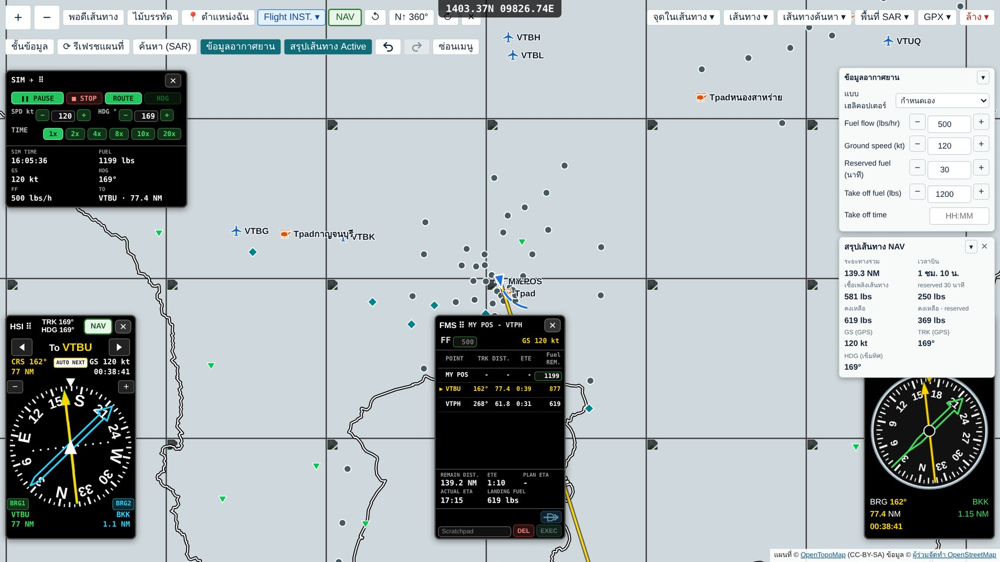
เวอร์ชันของแอป 4.7.7 พฤศจิกายน 2569
ก่อนเริ่มใช้งาน
ใช้ประกอบการวางแผนและฝึกเท่านั้น แอปนี้ไม่ใช่อุปกรณ์นำทางที่ได้รับการรับรอง ตัวเลขระยะ เวลา และเชื้อเพลิงเป็นการคำนวณเบื้องต้น (ระยะคำนวณแบบ great circle, เวลาและเชื้อเพลิงคิดจาก groundspeed ค่าเดียว ไม่ได้คิดลม) ต้องตรวจกับ AIP / NOTAM / สภาพอากาศทางการก่อนบินทุกครั้ง
แอปนี้คืออะไร เป็นหน้าเว็บไฟล์เดียว ใช้วางเส้นทางบนแผนที่ คำนวณระยะ ทิศ เวลาบิน และเชื้อเพลิง สร้างเส้นทางค้นหา (SAR) พิมพ์ Flight Log ดูข้อมูลสนามบิน และฝึกบินตามเส้นทางด้วยเครื่องจำลอง (SIM) พร้อมเครื่องวัด HSI, RMI และตาราง FMS ใช้ได้บนคอมพิวเตอร์ iPad และหน้า Google Sites หรือเปิดผ่านลิงก์เว็บของหน่วย (GitHub Pages)
สิ่งที่ต้องมี
เบราว์เซอร์ เช่น Chrome หรือ Safari (บน iPad ใช้ผ่านแอปที่หน่วยกำหนดได้)
อินเทอร์เน็ต เพื่อโหลดภาพแผนที่พื้นหลัง (หรือดาวน์โหลดแผนที่ไว้ล่วงหน้า ดูหัวข้อ 1.3) กดดู METAR/TAF หรือเครื่องบิน (ADS-B) และซิงก์ข้อมูลส่วนตัวกับชีต
ถ้าต้องการให้จุดของฉัน เส้นทาง และพื้นที่ SAR ตามไปทุกเครื่อง ให้ขอ “รหัสซิงก์” ของตนเองจากผู้ดูแล (หัวข้อ 10.6) ถ้าไม่มีรหัส แอปยังใช้ได้ครบ แต่ข้อมูลส่วนตัวเก็บในเครื่องนี้เท่านั้น
ข้อมูลอ้างอิงในแอป (สนามบิน TPAD VOR จุดรายงาน พื้นที่หวงห้าม ยอดเขา ฯลฯ รวม 774 รายการ) ฝังมากับไฟล์ ใช้ได้แม้ไม่ต่อชีตกลาง
เนื้อหาในคู่มือ
1 เริ่มต้นใช้งาน หน้าหลัก แท็บทั้ง 6 ติดตั้งลงหน้าจอโฮม ใช้ออฟไลน์ การอัปเดต และแผนที่ออฟไลน์
2 วางเส้นทางและใส่จุดพิกัด พิมพ์รหัสจุด สูตรทิศ/ระยะ ค้นหาจุด
3 อากาศยานและสรุปเส้นทาง เลือกแบบ ใส่เชื้อเพลิง อ่านผลคำนวณ
4 แผนที่เต็มจอ ปุ่มทั้งหมด เมนู และชั้นข้อมูล
5 สนามบิน ความถี่ METAR / TAF ไม่ต้องใช้รหัสหรือตั้งค่าเพิ่ม
6 เครื่องบิน ADS-B และเรดาร์ฝน
7 ไม้บรรทัดและหมุนแผนที่
8 เส้นทางค้นหา SAR 8 รูปแบบ ตามแนว IAMSAR
9 เครื่องจำลอง SIM, HSI, RMI และ FMS
10 เก็บ ส่งออก และเครื่องมือเสริม เส้นทางที่เก็บไว้ GPX จุดทั้งหมด แปลงหน่วย Flight Log จุดร่วม/จุดของฉัน และรหัสซิงก์รายบุคคล
11 ภูมิประเทศ: TAWS กราฟความสูง และ FLTA ระบายสีภูมิประเทศ กราฟความสูงตามเส้นทาง เตือนภูมิประเทศข้างหน้า
12 โหมดบิน (Flight mode) ปุ่มใหญ่สำหรับ iPad / โทรศัพท์ แถบตัวเลข Menu และ Manual
13 Track, Mark และ GPX บันทึกเส้นทางบิน สร้างจุดจากตำแหน่งปัจจุบัน
14 ปัญหาที่พบบ่อย และข้อมูลเก็บไว้ที่ไหน
วิธีอ่านภาพประกอบ ตัวเลขวงกลมสีชมพูบนภาพ คือจุดที่อธิบายในรายการใต้ภาพนั้น พื้นหลังแผนที่ในภาพบางภาพเป็นสีเทาเรียบ เพราะภาพถ่ายในสภาพแวดล้อมที่โหลดแผนที่ไม่ได้ ในการใช้งานจริงจะเห็นแผนที่เต็ม
1 เริ่มต้นใช้งาน
เปิดไฟล์ Tpad helicopter planner v4.7.7.html หรือเปิดลิงก์เว็บของหน่วย (https://ow3652.github.io/Tpadhelicopterplanner/ ) หรือหน้า Google Sites หัวหน้าจอแสดงชื่อ “วางแผนเส้นทางบินเฮลิคอปเตอร์” และเลขเวอร์ชัน แถวขวาบนมีลิงก์ 📖 คู่มือการใช้งาน (เปิดคู่มือฉบับล่าสุด ในแอปที่ติดตั้งลงหน้าจอโฮมจะเปิดเป็นหน้าซ้อนที่มีปุ่ม “✕ ปิดคู่มือ” และเก็บไว้อ่านตอนออฟไลน์ได้ หลังจากเปิดแอปตอนมีอินเทอร์เน็ตแล้วอย่างน้อยหนึ่งครั้ง) และปุ่ม 📥 แผนที่ออฟไลน์ อยู่ทางซ้ายของชื่อผู้ใช้และช่องกรอกรหัส ส่วนปุ่ม ⛶ แผนที่เต็มจอ (แสดงบน iPad แนวตั้ง) อยู่ขวาสุดของแถวแท็บ ใต้ช่องกรอกรหัส หน้าหลักมี 6 แท็บ
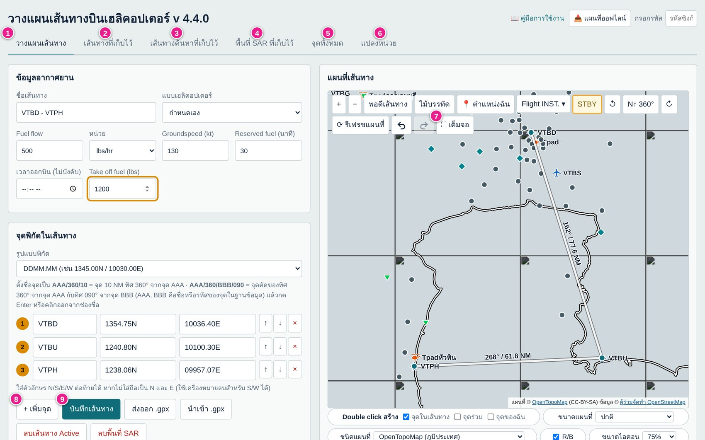
ภาพที่ 1 หน้าหลัก แท็บ “วางแผนเส้นทาง”
วางแผนเส้นทาง ใส่ข้อมูลอากาศยาน ใส่จุดพิกัด ดูแผนที่ สรุปเส้นทาง และ Flight Logเส้นทางที่เก็บไว้ รายการเส้นทางที่บันทึก มีปุ่มโหลด/แสดง/ลบ และนำเข้า-ส่งออก GPXเส้นทางค้นหาที่เก็บไว้ เส้นทาง SAR ที่บันทึกพื้นที่ SAR ที่เก็บไว้ พื้นที่ค้นหาที่สร้างจากรูปแบบ SARจุดทั้งหมด รายการจุดทั้ง 774 รายการ ค้นหา และส่งออก GPXแปลงหน่วย คำนวณเติมน้ำมัน Jet A-1 และแปลงพิกัดระหว่าง datum⛶ เต็มจอ เปิดแผนที่เต็มหน้าจอ เป็นโหมดที่สะดวกที่สุดสำหรับการวางแผนและใช้เครื่องจำลอง+ เพิ่มจุด เพิ่มช่องจุดพิกัดในเส้นทางบันทึกเส้นทาง เก็บเส้นทางไว้ในรายการ “เส้นทางที่เก็บไว้” แสดงข้อความยืนยันที่ด้านล่างจอ
มุมขวาบน มีช่อง “กรอกรหัส” สำหรับรหัสซิงก์ของผู้ใช้แต่ละคน เมื่อรหัสถูกต้อง แอปแสดงชื่อผู้ใช้ เช่น “👤 ชื่อ” ไว้หน้าช่องรหัส ถ้ารหัสผิด หรือไม่ได้กรอก จะไม่แสดงชื่อ (ดูหัวข้อ 10.6)
มุมขวาบนเมื่อใส่รหัสซิงก์ถูกต้อง (ชื่อ somchai เป็นชื่อสมมติ ช่องรหัสแสดงเป็นจุดเพื่อไม่ให้เห็นรหัส) ปุ่มรีเฟรชทั้งหมดจากชีต อยู่ในแท็บ “เส้นทางที่เก็บไว้”, “เส้นทางค้นหาที่เก็บไว้” และ “จุดทั้งหมด” กดครั้งเดียวโหลดจุดร่วม จุดของฉัน เส้นทาง เส้นทางค้นหา และพื้นที่ SAR จากชีตพร้อมกัน แล้วแจ้งผลสรุปเป็นข้อความเดียว ถ้ายังไม่ได้ใส่รหัสซิงก์ จะรีเฟรชเฉพาะจุดร่วม
1.1 ติดตั้งลงหน้าจอโฮม และใช้งานออฟไลน์ (iPad / iPhone)
เมื่อเปิดแอปผ่านลิงก์เว็บของหน่วย (https://…github.io/… ) ติดตั้งลงหน้าจอโฮมได้ จะเปิดเต็มจอเหมือนแอป และเปิดได้แม้ไม่มีสัญญาณอินเทอร์เน็ต ไฟล์ HTML ที่เปิดจากเครื่อง (เช่นผ่านแอป Pagira) ไม่ต้องติดตั้ง ใช้ออฟไลน์ได้อยู่แล้ว
ขณะที่มีอินเทอร์เน็ต เปิดลิงก์เว็บของหน่วยใน Safari รอให้หน้าโหลดเสร็จ อาจเห็นข้อความ “เก็บแอปไว้ใช้ออฟไลน์แล้ว”
โหลดหน้าซ้ำหนึ่งครั้ง (ดึงหน้าลงเพื่อรีเฟรช หรือกดปุ่มโหลดซ้ำ)
กดปุ่มแชร์ของ Safari แล้วเลือก เพิ่มไปยังหน้าจอโฮม ตั้งชื่อ (ค่าเริ่มต้น “Tpad Heli”) แล้วกด เพิ่ม ชื่อเมนูอาจต่างกันตามรุ่น iPadOS
เปิดแอปจากไอคอนบนหน้าจอโฮม ครั้งแรกต้องกรอกรหัสซิงก์ และปลดล็อก ADS-B ใหม่ เพราะแอปที่ติดตั้งเก็บข้อมูลแยกจาก Safari ธรรมดา (สำรองจุดของฉันที่เก็บเฉพาะเครื่องไว้ก่อนถ้ามี)
ก่อนใช้งานจริง ลองเปิดโหมดเครื่องบิน ปิดแอปทั้งหมดจากตัวสลับแอป แล้วเปิดใหม่จากไอคอน เพื่อยืนยันว่าเปิดและวางแผนเส้นทางได้โดยไม่มีสัญญาณ
ออฟไลน์แล้วใช้อะไรได้ ตัวแอปทั้งหมด ฐานข้อมูลที่ฝังในไฟล์ การวางเส้นทาง คำนวณ SAR เครื่องจำลอง HSI/RMI/FMS ส่งออก GPX/PDF ที่ต้องใช้อินเทอร์เน็ต คือ METAR/TAF ADS-B เรดาร์ฝน และการซิงก์ชีต (จุดร่วม จุดของฉัน เส้นทาง) ส่วนภาพแผนที่พื้นหลังจะเห็นเฉพาะบริเวณที่เคยเปิดดูหรือดาวน์โหลดไว้ (ดูหัวข้อ 1.3) เมื่อไม่มีสัญญาณ จะเห็นข้อความแจ้ง “ออฟไลน์” ประมาณ 4 วินาที (ไม่บังปุ่ม กดทะลุได้) แล้วเหลือเพียงไอคอนรูปสัญญาณ Wi-Fi ขีดฆ่าสีแดงที่แถบหัว เมื่อกลับมาออนไลน์ ไอคอนหายและขึ้น “กลับมาออนไลน์แล้ว”
แถบหัวขณะออฟไลน์ มีไอคอนสัญญาณขีดฆ่าอยู่หน้าลิงก์ “คู่มือการใช้งาน” (ภาพจากเบราว์เซอร์จำลอง ชื่อ somchai เป็นชื่อสมมติ) 1.2 การอัปเดตเวอร์ชัน (ผู้ใช้เลือกเอง)
เมื่อผู้ดูแลออกเวอร์ชันใหม่ แอปที่ติดตั้งจะตรวจและโหลดเก็บไว้เงียบๆ ตอนเปิดแอปขณะมีอินเทอร์เน็ต (และตรวจซ้ำทุก 30 นาที) แล้วขึ้นแถบ “มีเวอร์ชันใหม่ของแอป” แอปจะไม่เปลี่ยนเวอร์ชันเองขณะใช้งาน
อัปเดตตอนนี้ หน้าจะโหลดใหม่ทันที งานที่ยังไม่บันทึกจะหาย ควรบันทึกเส้นทางก่อนกด ภายหลัง ปิดแถบ ใช้เวอร์ชันเดิมต่อ แถบจะกลับมาถามอีกเมื่อเปิดแอปใหม่หรือโหลดหน้าซ้ำ
แถบแจ้งเวอร์ชันใหม่ มีปุ่ม “อัปเดตตอนนี้” และ “ภายหลัง” (ภาพจากเบราว์เซอร์จำลอง) ถ้าไม่กดและปิดแอปทั้งหมด แล้วเปิดใหม่ในภายหลัง ระบบอาจเปลี่ยนเป็นเวอร์ชันใหม่ที่โหลดไว้แล้วโดยไม่ถามอีก ดังนั้นหลังเห็นแถบนี้ อย่าปิดแอปทั้งหมดกลางภารกิจ ถ้ายังไม่ต้องการเปลี่ยนเวอร์ชัน
ไฟล์ HTML ที่เปิดจากเครื่อง (เช่นผ่าน Pagira) ไม่มีแถบอัปเดต ต้องนำไฟล์เวอร์ชันใหม่มาแทนที่เอง
1.3 แผนที่ออฟไลน์ (เก็บภาพแผนที่พื้นหลังไว้ใช้ตอนไม่มีอินเทอร์เน็ต)
ภาพแผนที่พื้นหลังเป็นภาพที่ดึงจากอินเทอร์เน็ตทีละแผ่นเล็ก ๆ ถ้าไม่เก็บไว้ ตอนออฟไลน์จะเห็นพื้นว่าง (เส้นทางและการคำนวณยังใช้ได้ตามปกติ) เวอร์ชันนี้เก็บภาพแผนที่ไว้ในเครื่องได้ 2 แบบ เปิดได้จากปุ่ม 📥 แผนที่ออฟไลน์ ที่แถวขวาบน (ทางซ้ายของช่องกรอกรหัส) หรือในกล่อง “ชั้นข้อมูล” ของแผนที่เต็มจอ
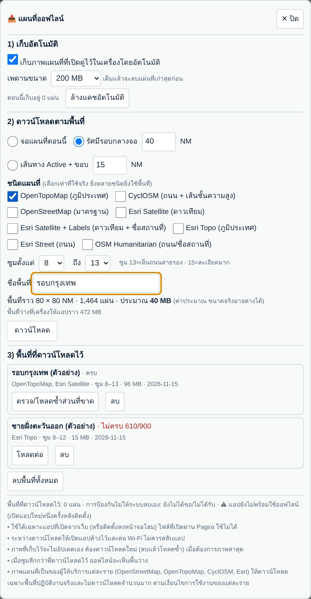
หน้าจอ “แผนที่ออฟไลน์” (รายการพื้นที่ในภาพเป็นข้อมูลตัวอย่าง) แบบที่ 1 เก็บอัตโนมัติ ภาพแผนที่ที่เคยเปิดดูจะถูกเก็บไว้ในเครื่องเอง ไม่ต้องทำอะไร เปิดใช้งานอยู่แล้วตามค่าเริ่มต้น เลือกเพดานขนาดได้ 100 / 200 / 500 / 1,000 MB เมื่อเต็มจะลบแผ่นที่เก่าที่สุดก่อน ข้อดีคือง่าย ข้อเสียคือบริเวณที่ไม่เคยเปิดดูจะว่าง จึง ไม่เหมาะเป็นวิธีหลักสำหรับงานจริง
แบบที่ 2 ดาวน์โหลดตามพื้นที่ เลือกพื้นที่ปฏิบัติงานแล้วดาวน์โหลดล่วงหน้า (ควรทำตอนมี Wi-Fi) ภาพที่ดาวน์โหลดไว้จะไม่ถูกลบเอง
เลื่อนและซูมแผนที่ให้ตรงพื้นที่ที่ต้องการ แล้วกด 📥 แผนที่ออฟไลน์
เลือกพื้นที่ จอแผนที่ตอนนี้ , รัศมีรอบกลางจอ (ใส่ระยะ NM) หรือ เส้นทาง Active + ขอบ (ใส่ระยะขอบ NM ต้องมีเส้นทางวางอยู่ก่อน)
เลือก ชนิดแผนที่ เท่าที่ใช้จริง (เลือกหลายชนิดจะใช้พื้นที่เพิ่มตามจำนวนชนิด) และ ระดับซูม (ตั้งแต่ถึง) แนะนำซูม 8 ถึง 13
ดูบรรทัดสรุปขนาดที่ประมาณไว้ จำนวนแผ่น และพื้นที่ว่างของเครื่อง ตั้งชื่อพื้นที่ แล้วกด ดาวน์โหลด ระบบจำกัดไม่เกิน 30,000 แผ่นต่อครั้ง
ระหว่างดาวน์โหลดให้เปิดแอปค้างไว้ ปิดการล็อกจอ และไม่สลับไปแอปอื่น ถ้าหยุดกลางคัน กด “โหลดต่อ” ที่รายการพื้นที่ ระบบจะข้ามแผ่นที่มีแล้วลองใช้จริงก่อนออกบิน: เปิดโหมดเครื่องบิน เปิดแอป แล้วดูว่าแผนที่ในพื้นที่ที่ดาวน์โหลดยังขึ้นครบ
ขนาดที่ใช้ (ประมาณการ ต่อ 1 ชนิดแผนที่ ขนาดจริงต่างกันตามชนิดและภูมิประเทศ)
พื้นที่ ซูมถึง 10 ซูมถึง 12 ซูมถึง 13 ซูมถึง 14 รัศมีราว 50 NM รอบกรุงเทพ ~1 MB ~10–15 MB ~30–55 MB ~120–210 MB ภาคกลาง + ตะวันออก ~5 MB ~60–105 MB ~230–400 MB ~0.9–1.6 GB ทั้งประเทศไทย ~30–50 MB ~450–800 MB ~1.8–3 GB ไม่เหมาะ
ข้อควรระวัง (1) ใช้ได้เฉพาะแอปที่เปิดจากลิงก์เว็บหรือติดตั้งลงหน้าจอโฮม ไฟล์ที่เปิดผ่าน Pagira ใช้ไม่ได้ (2) iPad ไม่รับประกันพื้นที่เก็บ ระบบอาจลบข้อมูลของเว็บเองถ้าไม่ได้ใช้แอปนานหลายสัปดาห์หรือพื้นที่เครื่องเหลือน้อย แอปจึงขอให้ระบบเก็บไว้ถาวรให้อัตโนมัติ แต่ไม่มีคำรับรอง ควรตรวจอีกครั้งก่อนบิน (3) ภาพที่เก็บไว้จะไม่อัปเดตเอง ต้องลบแล้วดาวน์โหลดใหม่เมื่อต้องการภาพล่าสุด (4) ซูมลึกกว่าที่ดาวน์โหลดไว้จะเห็นพื้นว่าง (5) ภาพแผนที่เป็นของผู้ให้บริการแต่ละราย (OpenStreetMap, OpenTopoMap, CyclOSM, Esri) ให้ดาวน์โหลดเฉพาะพื้นที่ปฏิบัติงานจริง ไม่ดาวน์โหลดจำนวนมาก และปฏิบัติตามเงื่อนไขการใช้งานของแต่ละราย
คู่มือออฟไลน์: เมื่อเปิดแอปผ่านเว็บตอนมีอินเทอร์เน็ต แอปจะเก็บคู่มือ (แบบ HTML พร้อมรูป ขนาดราว 3 MB) ไว้ในเครื่องเอง และอัปเดตสัปดาห์ละครั้ง จึงเปิดอ่านจากลิงก์ “📖 คู่มือการใช้งาน” ได้แม้ไม่มีสัญญาณ ถ้าเปิดคู่มือตอนออฟไลน์แล้วไม่ขึ้น แสดงว่ายังไม่เคยเก็บไว้ ให้เปิดแอปตอนมีอินเทอร์เน็ตแล้วรอสักครู่
ลบภาพที่เก็บไว้: กด ลบ ที่รายการพื้นที่ (ลบเฉพาะส่วนที่ไม่ซ้อนกับพื้นที่อื่น) หรือ ลบพื้นที่ทั้งหมด / ล้างแคชอัตโนมัติ การอัปเดตแอปเป็นเวอร์ชันใหม่ ไม่ลบ แผนที่ที่เก็บไว้
2 วางเส้นทางและใส่จุดพิกัด
เส้นทางคือลำดับจุดตั้งแต่ 2 จุดขึ้นไป เมื่อมีครบ 2 จุด แอปวาดเส้นบนแผนที่ แสดงทิศและระยะของแต่ละช่วง (ป้ายเช่น 162° / 77.6 NM) และตั้งชื่อเส้นทางให้อัตโนมัติเป็น “ต้นทาง - ปลายทาง”
2.1 ใส่จุดในช่อง “จุดพิกัดในเส้นทาง”
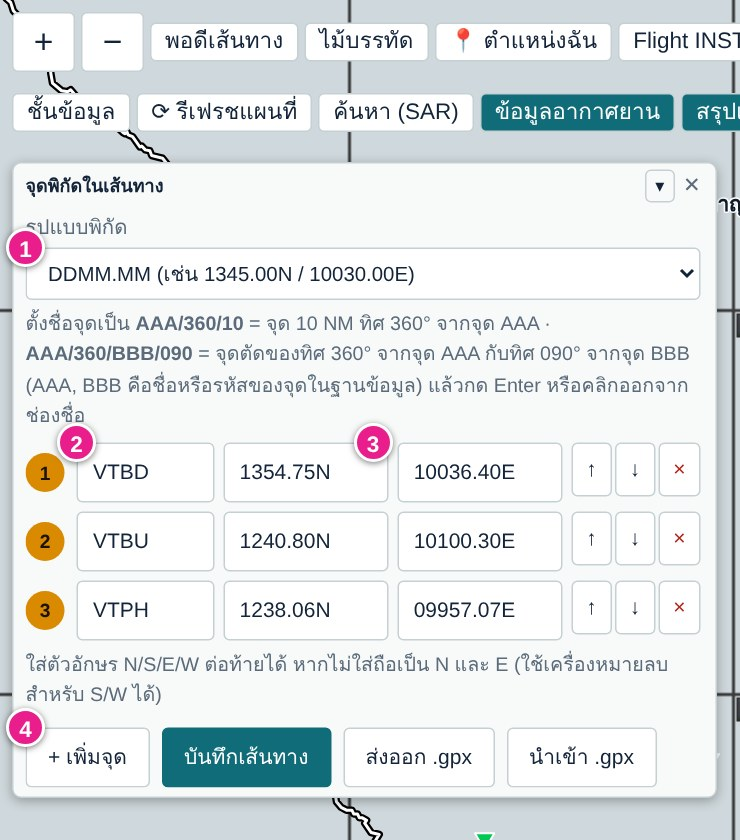
ภาพที่ 2 แผง “จุดพิกัดในเส้นทาง” (เปิดจากเมนู เส้นทาง ▾)
รูปแบบพิกัด เลือก DDMMSS, DDMM.MM หรือ DD.DDDD ใส่ตัวอักษร N/S/E/W ต่อท้ายได้ ถ้าไม่ใส่ถือเป็น N และ E (ใช้เครื่องหมายลบสำหรับ S/W ได้)ชื่อจุด พิมพ์ชื่อหรือรหัสในฐานข้อมูล เช่น VTBD แล้วกด Enter ระบบใส่พิกัดให้เองละติจูด / ลองจิจูด พิมพ์เองได้ ปุ่ม ↑ ↓ สลับลำดับจุด ปุ่ม × ลบจุด+ เพิ่มจุด เพิ่มแถวใหม่ บันทึกเส้นทาง เก็บเส้นทาง
2.2 ชื่อจุดแบบสูตร
พิมพ์ในช่องชื่อจุด ความหมาย AAA/360/10 จุดห่างจากจุด AAA ไป 10 NM ในทิศ 360° AAA/360/BBB/090 จุดตัดของทิศ 360° จากจุด AAA กับทิศ 090° จากจุด BBB (AAA, BBB คือชื่อหรือรหัสของจุดในฐานข้อมูล)
พิมพ์แล้วกด Enter หรือคลิกออกจากช่องชื่อ แอปจะคำนวณพิกัดให้
2.3 ค้นหาจุดจากฐานข้อมูล
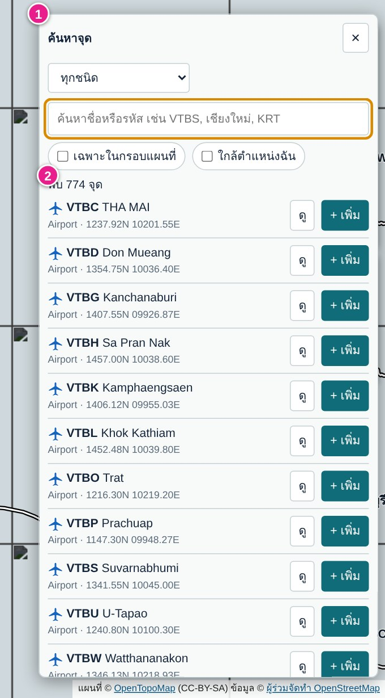
ภาพที่ 3 แผง “ค้นหาจุด” (เมนู จุดในเส้นทาง ▾ → ค้นหาจุด)
ช่องค้นหา พิมพ์ชื่อหรือรหัส เช่น VTBS หรือชื่อเป็นภาษาไทย ตัวกรองด้านบนเลือกชนิดจุดได้ (Airport, TPAD, BPP, VOR, VFR/IFR Reporting Point, Point, Palace, Restrict, ยอดเขา, จุดของฉัน, จุดร่วม)ติ๊ก เฉพาะในกรอบแผนที่ หรือ ใกล้ตำแหน่งฉัน เพื่อจำกัดผล ปุ่ม ดู พาแผนที่ไปที่จุดนั้น ปุ่ม + เพิ่ม ใส่จุดต่อท้ายเส้นทาง
2.4 วิธีเพิ่ม/แก้จุดบนแผนที่
ดับเบิลคลิกบนแผนที่ สร้างจุด ต้องติ๊กตัวเลือก “Double click สร้าง → จุดในเส้นทาง” ในกล่องชั้นข้อมูลลากเส้นทาง เพื่อแทรกจุดระหว่างจุดเดิม ถ้าลากใกล้จุดที่แสดงบนแผนที่ (สนามบิน VOR TPAD BPP RP) แอปจะดูดติดและเพิ่มจุดนั้นให้คลิกที่จุดของเส้นทาง แล้วกด “ลบจุดนี้” เพื่อลบจุดย้อนกลับ / ทำซ้ำ ปุ่มลูกศรโค้งบนแถบเครื่องมือ
บน iPad ในโหมดเต็มจอจะมีเครื่องหมายบวกอยู่กลางแผนที่ ลากแผนที่ให้เครื่องหมายอยู่ตรงตำแหน่งที่ต้องการ แถบพิกัดด้านบนแสดงพิกัดนั้น แตะแถบพิกัดเพื่อวางจุด (ทำงานเหมือนดับเบิลคลิกบนคอมพิวเตอร์) ต้องเปิดตัวเลือกวางจุดในกล่องชั้นข้อมูลไว้ก่อน
3 อากาศยานและสรุปเส้นทาง
ใส่ข้อมูลอากาศยานเพื่อให้แอปคำนวณเวลาและเชื้อเพลิง ในหน้าหลักอยู่ที่การ์ด “Aircraft” ในโหมดเต็มจอกดปุ่ม Aircraft และ Summary เพื่อเปิด/ซ่อนกล่อง
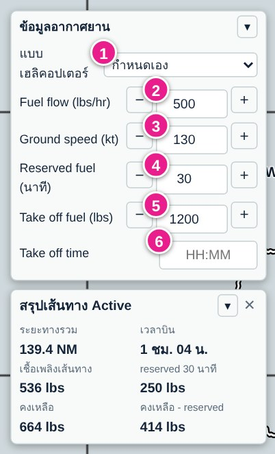
ภาพที่ 4 กล่อง Aircraft และ Summary (โหมดเต็มจอ · ภาพจาก v4.4.0 ใช้ชื่อเดิม)
แบบเฮลิคอปเตอร์ Bell 429 (500 lbs/hr), H155 (350 kg/hr), AW189 (500 kg/hr), H175 (520 kg/hr), Bell 412EPI (720 lbs/hr), Bell 412EP (650 lbs/hr) หรือ “กำหนดเอง” เลือกแบบแล้วระบบใส่อัตราสิ้นเปลืองให้ ถ้าแก้ตัวเลขเอง ช่องแบบจะเปลี่ยนเป็น “กำหนดเอง”Fuel flow อัตราสิ้นเปลือง (หน่วย lbs/hr หรือ kg/hr เลือกได้ในหน้าหลัก)Ground speed (kt) ความเร็วภาคพื้นที่ใช้คำนวณเวลาReserved fuel (นาที) เชื้อเพลิงสำรองเป็นเวลาTake off fuel (lbs) เชื้อเพลิงตอนออกบิน (ไม่บังคับ) ถ้าใส่ จะคำนวณ “คงเหลือ” ให้ ถ้าเว้นว่างจะไม่แสดงช่องคงเหลือTake off time เวลาออกบิน (ไม่บังคับ) ถ้าใส่ ตารางสรุปจะแสดง ETA ที่แต่ละจุดผลสรุป ระยะทางรวม เวลาบิน เชื้อเพลิงเส้นทาง เชื้อเพลิง reserved คงเหลือ และ “คงเหลือ - reserved” ค่าติดลบแสดงเป็นสีแดง แปลว่าเชื้อเพลิงไม่พอ
3.1 ตารางสรุปรายช่วง (หน้าหลัก)
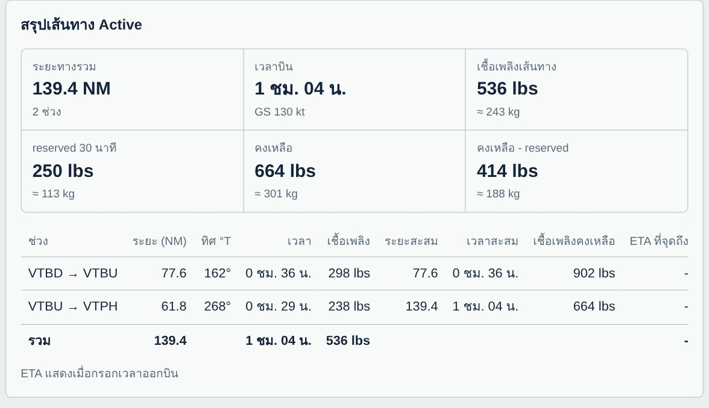
ภาพที่ 5 การ์ด “Summary” ในหน้าหลัก (ภาพจาก v4.4.0 ใช้ชื่อเดิม) การ์ดนี้แสดงตัวเลขรวม (พร้อมค่าเป็น kg) และตารางรายช่วง ได้แก่ ระยะ (NM) ทิศจริง (°T) เวลา เชื้อเพลิง ระยะสะสม เวลาสะสม เชื้อเพลิงคงเหลือ และ ETA ที่จุดถึง (แสดงเมื่อกรอกเวลาออกบิน)
หมายเหตุ เวลาและเชื้อเพลิงใช้ groundspeed ค่าเดียวตลอดเส้นทาง ไม่ได้คิดผลของลม ความสูง น้ำหนัก หรือการไต่/ลดระดับ
4 แผนที่เต็มจอ
กดปุ่ม ⛶ เต็มจอ ที่มุมแผนที่ จะเห็นปุ่มซ้อนบนแผนที่ หากกดปุ่ม “ซ่อนเมนู” ปุ่มทั้งหมดจะหายไป เหลือแถบปุ่มเล็กที่มุมซ้ายบน เรียงจากซ้ายไปขวา: ☰ เมนู (เรียกเมนูกลับ), ย้อนกลับ, ทำซ้ำ และ ✕ (ออกจากโหมดเต็มจอ อยู่ขวาสุด ถัดจากปุ่มทำซ้ำ)
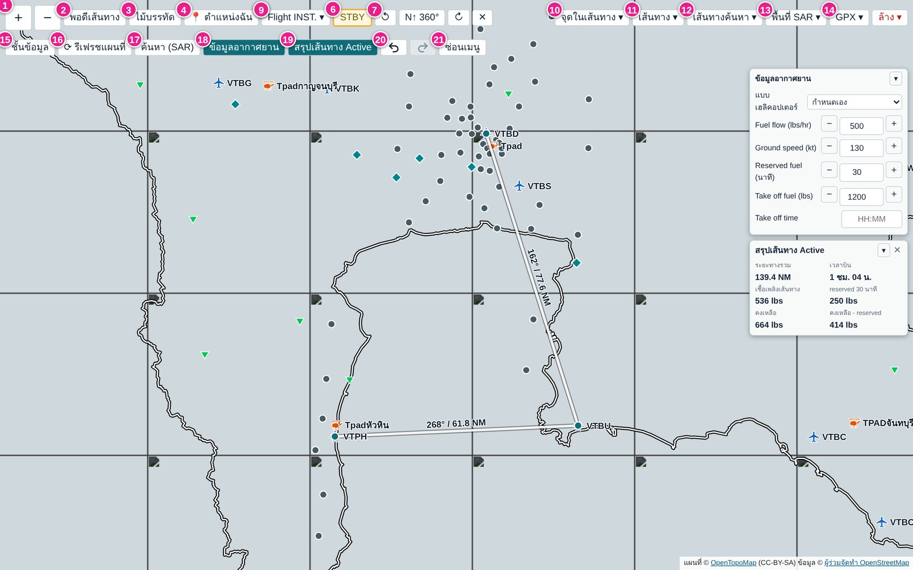
ภาพที่ 6 แถบเครื่องมือในโหมดเต็มจอ
+ / − ซูมเข้า/ออกพอดีเส้นทาง ปรับมุมมองให้เห็นทั้งเส้นทางไม้บรรทัด วัดระยะ (หัวข้อ 7)ตำแหน่งฉัน แสดงตำแหน่งของเครื่องนี้บนแผนที่ด้วย GPS (iPad รุ่นที่มี Cellular มี GPS ในตัว)Flight INST. ▾ เปิด RMI / HSI / FMS / SIM (หัวข้อ 9)STBY / NAV ปุ่มสถานะนำทาง: STBY → แตะเพื่อ NAV ไปยังจุดแรกของเส้นทาง Active (หรือกลับไปจุดเดิม) NAV → แตะเพื่อกลับ Standby↺ N↑ ↻ หมุนแผนที่ ปุ่มกลางแสดงองศา กดเพื่อกลับทิศเหนืออยู่บน✕ ออกจากโหมดเต็มจอจุดในเส้นทาง ▾ เพิ่มจุด, ค้นหาจุดเส้นทาง ▾ สร้างใหม่, จุดพิกัดในเส้นทาง, รายการเส้นทางค้นหา ▾ สร้างใหม่, รายการพื้นที่ SAR ▾ รายการGPX ▾ นำเข้า, ส่งออกล้าง ▾ ล้างเส้นทาง, เส้นทางค้นหา, พื้นที่ SAR หรือทั้งหมดชั้นข้อมูล เปิดกล่องเลือกชั้นข้อมูลของแผนที่รีเฟรชแผนที่ โหลดภาพแผนที่ใหม่โดยไม่ต้องรีโหลดหน้าค้นหา (SAR) เปิดแผงรูปแบบ SARAircraft เปิด/ซ่อนกล่อง AircraftSummary เปิด/ซ่อนกล่องสรุปย้อนกลับ / ทำซ้ำ Undo / Redoซ่อนเมนู ซ่อนปุ่มทั้งหมด (เรียกกลับด้วย ☰ เมนู)
4.1 กล่อง “ชั้นข้อมูล”
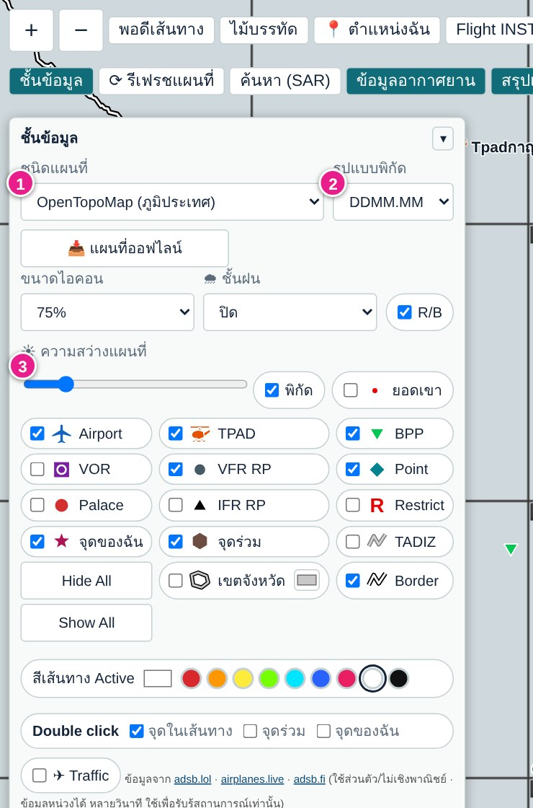
ภาพที่ 7 กล่องชั้นข้อมูล
ชนิดแผนที่ OpenTopoMap, CyclOSM, OpenStreetMap, Esri Satellite, Esri Satellite + Labels, Esri Topo, Esri Street, OSM Humanitarian หรือ “ว่าง (พื้นหลังสีดำ)” ถ้าแบบใดไม่ขึ้น ลองสลับแบบอื่นรูปแบบพิกัด DDMMSS / DDMM.MM / DD.DDDD ใช้กับการแสดงและการใส่พิกัดความสว่างแผนที่ แถบเลื่อน ลดความสว่างเพื่อให้เห็นเส้นทางชัดขึ้น📥 แผนที่ออฟไลน์ เปิดหน้าจอเก็บ/ดาวน์โหลดแผนที่ไว้ใช้ตอนไม่มีอินเทอร์เน็ต (ดูหัวข้อ 1.3)
ตัวเลือกอื่นในกล่อง
ขนาดไอคอน 100% / 75% / 50% และ R/B แสดงหรือซ่อนทิศ/ระยะ (Range/Bearing) บนเส้นทาง Activeชั้นฝน ปิด / ฝนจริง / ฝนพยากรณ์ติ๊กเปิด/ปิด พิกัด, ยอดเขา, Airport, TPAD, BPP, VOR, VFR RP, Point, Palace, IFR RP, Restrict, จุดของฉัน, จุดร่วม, TADIZ, เขตจังหวัด, Border ปุ่ม Hide All / Show All ซ่อน/แสดงพร้อมกัน
สีเส้นทาง Active เลือกสีที่เห็นชัดบนแผนที่แต่ละแบบDouble click สร้าง เลือกว่าดับเบิลคลิกจะสร้างจุดในเส้นทาง จุดร่วม หรือจุดของฉันTraffic เปิดชั้นเครื่องบิน (หัวข้อ 6)
Restrict (พื้นที่หวงห้าม) แสดงเป็นตัว R สีแดง พร้อมวงรัศมี คลิกที่ R เพื่ออ่านรายละเอียด ส่วน TADIZ แสดงแนวเขตป้องกันประเทศ และ Border แสดงแนวชายแดน/ชายฝั่ง
5 สนามบิน ความถี่ และ METAR / TAF
แตะ (คลิก) ที่ไอคอนสนามบินบนแผนที่ จะมีกล่องข้อมูลแสดงชื่อ รหัส ความถี่วิทยุ (APP, APP Heli, TWR, GND, ATIS ตามที่มีในฐานข้อมูล) และพิกัด ปุ่ม METAR และ TAF ใช้ดึงรายงานอากาศของสนามบินนั้น
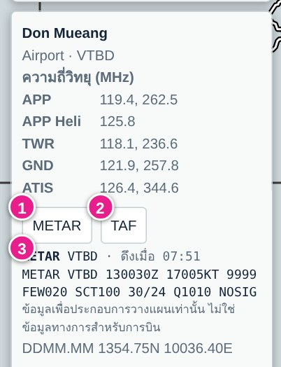
ภาพที่ 8 กล่องข้อมูลสนามบิน ดอนเมือง (VTBD) ข้อความ METAR ในภาพเป็นตัวอย่างสมมติเพื่อประกอบคู่มือ
กด METAR แสดงรายงานล่าสุดของสนามบิน พร้อมเวลาที่ดึงข้อมูล
กด TAF แสดงพยากรณ์สนามบิน
ข้อความแสดงเป็นข้อความดิบ ใช้ได้กับสนามบิน 49 แห่งในฐานข้อมูล ถ้าสนามบินใดไม่ออกรายงาน แอปแจ้งว่าไม่มีรายงาน
ถ้าดึงไม่ได้ แอปแจ้งสาเหตุเป็นข้อความ เช่น หมดเวลา, ตัวกลางตอบ error, เรียกตัวกลางไม่ได้ หรือยังไม่ได้ตั้ง URL ตัวกลาง
ข้อมูล METAR/TAF ใช้ประกอบการวางแผนเท่านั้น ต้องตรวจกับแหล่งข้อมูลทางการก่อนตัดสินใจบิน
5.1 METAR / TAF ไม่ต้องใช้รหัสหรือตั้งค่า
เบราว์เซอร์ไม่อนุญาตให้หน้าเว็บเรียก aviationweather.gov โดยตรง (ติดข้อจำกัด CORS) แอปจึงเรียกผ่านตัวกลาง Apps Script ของหน่วยที่ฝังมากับไฟล์ ผู้ใช้ทุกคนกด METAR/TAF ได้ทันที ไม่ต้องใส่รหัส ไม่ต้องวาง URL และไม่เกี่ยวกับตัวกลางของ ADS-B (หัวข้อ 6)
ถ้ากดแล้วขึ้นข้อความว่าเรียกตัวกลางไม่ได้ ให้ตรวจอินเทอร์เน็ตก่อน ถ้ายังไม่ได้ให้แจ้งผู้ดูแลตรวจการ Deploy ของสคริปต์ METAR (หัวข้อ 14)
6 เครื่องบิน ADS-B และเรดาร์ฝน
ชั้น Traffic แสดงเครื่องบินจากข้อมูล ADS-B ของอาสาสมัคร (adsb.lol, airplanes.live, adsb.fi) ข้อมูลอาจหน่วงหลายวินาที และไม่ครอบคลุมทุกเครื่อง ใช้เพื่อรับรู้สถานการณ์เท่านั้น
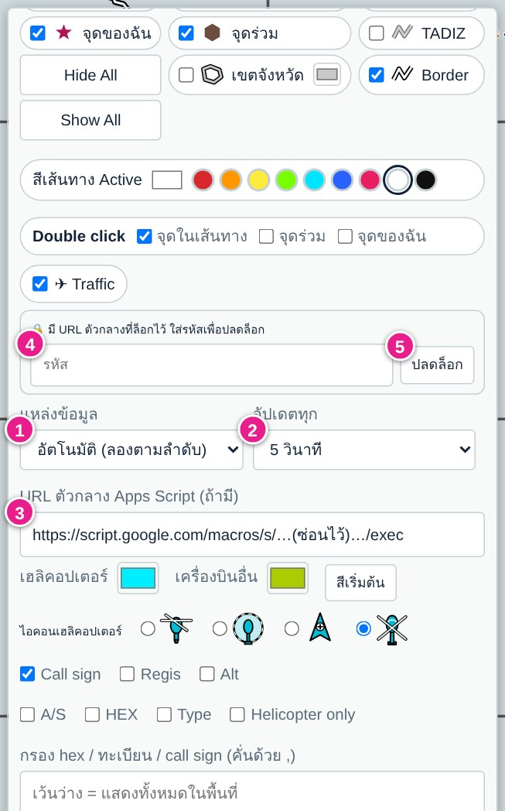
ภาพที่ 9 ส่วนตั้งค่า Traffic ในกล่องชั้นข้อมูล (URL ถูกซ่อนในภาพ)
แหล่งข้อมูล “อัตโนมัติ (ลองตามลำดับ)” หรือเลือกแหล่งเองอัปเดตทุก 3 / 5 / 10 / 15 วินาทีURL ตัวกลาง Apps Script (ถ้ามี) ช่วยให้ดึงข้อมูลเครื่องบินได้เมื่อเบราว์เซอร์ปิดกั้นการเรียกตรง (METAR/TAF ใช้ตัวกลางแยกต่างหาก ไม่ต้องตั้งค่า)ช่องรหัส เมื่อหน่วยฝัง URL ตัวกลางไว้ในไฟล์แบบเข้ารหัส ต้องใส่รหัสที่หน่วยแจ้งปลดล็อก ใช้ URL ที่ฝังไว้ และจำค่าในเครื่องนั้น (เปลี่ยนที่อยู่เว็บเมื่อไร ต้องปลดล็อกใหม่ เพราะเบราว์เซอร์จำค่าแยกตามที่อยู่เว็บ)
ด้านล่างยังตั้งสีของเฮลิคอปเตอร์/เครื่องบินอื่น เลือกไอคอนเฮลิคอปเตอร์ เลือกแสดง Call sign / Regis / Alt / A/S / HEX / Type และตัวกรอง “Helicopter only” ได้
รหัสปลดล็อกเป็นความลับของหน่วย ห้ามพิมพ์ลงในคู่มือหรือแชร์ในที่สาธารณะ ผู้จัดทำคู่มือนี้ไม่ได้ใส่รหัสใดๆ ไว้ในไฟล์
6.1 เรดาร์ฝน
ในกล่องชั้นข้อมูล เลือก “ชั้นฝน” เป็น ฝนจริง หรือ ฝนพยากรณ์ จะแสดงชั้นเรดาร์ซ้อนบนแผนที่ (ต้องมีอินเทอร์เน็ต) และเลือก ปิด เพื่อซ่อน
7 ไม้บรรทัดและหมุนแผนที่
7.1 ไม้บรรทัด
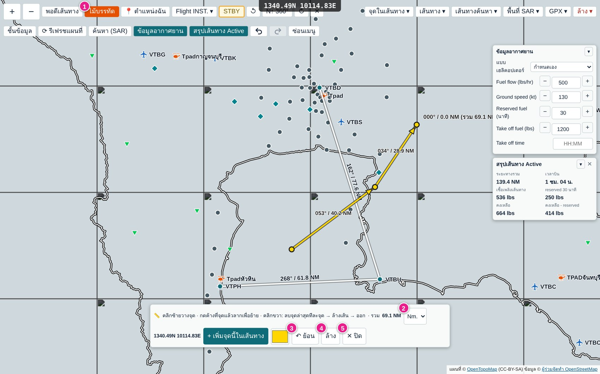
ภาพที่ 10 ใช้ไม้บรรทัดวัดระยะบนแผนที่ (แถบควบคุมอยู่ด้านล่างจอ)
กดปุ่ม ไม้บรรทัด บนแถบเครื่องมือ
เลือก หน่วย ได้ 4 แบบ: Nm. (ไมล์ทะเล), Km., m. และ ft ป้ายระยะเปลี่ยนตามทันที และเบราว์เซอร์จำค่าไว้ให้
คลิกซ้ายวางจุดทีละจุด ระบบแสดงทิศและระยะของแต่ละช่วงและระยะรวม กดค้างที่จุดแล้วลากเพื่อย้ายจุด
↶ ย้อน ลบจุดล่าสุดทีละจุดล้าง ล้างเส้นวัด และ ✕ ปิด ปิดไม้บรรทัด
บนคอมพิวเตอร์ คลิกขวาลบจุดล่าสุดทีละจุด → ล้างเส้น → ออก ปุ่ม + เพิ่มจุดนี้ในเส้นทาง ใช้จุดที่วัดเป็นจุดในเส้นทางได้ บน iPad ขณะใช้ไม้บรรทัดจะมีปุ่มบวกสีแดงให้กดตั้งจุด การแตะแผนที่ด้วยนิ้วจะไม่วางจุดจนกว่าจะปิดไม้บรรทัด
7.2 หมุนแผนที่
↺ / ↻ กดครั้งละ 1° กดค้างเพื่อหมุนต่อเนื่องN↑ (แสดงองศาปัจจุบัน) กลับให้ทิศเหนืออยู่ด้านบน (North up)คอมพิวเตอร์ (โหมดเต็มจอ) กดปุ่มเมาส์ขวาค้างแล้วลากไปทางซ้าย = หมุนทวนเข็ม ลากไปทางขวา = หมุนตามเข็ม ปล่อยแล้วคงทิศไว้iPad บิดสองนิ้วเหมือนหมุนลูกบิด เกินประมาณ 12° แผนที่จะหมุนตาม ถ้าโยกนิ้วออกหรือบีบเข้าก่อน จะเป็นการซูมล้วนๆเมื่อรีโหลดหน้า แผนที่กลับเป็น North up เสมอ ชื่อจุดยังอ่านได้ตั้งตรงเสมอ
8 เส้นทางค้นหา SAR
สร้างเส้นทางค้นหาตามรูปแบบมาตรฐาน (อ้างอิงแนว IAMSAR) แอปแสดงตัวอย่างรูปแบบ ลากย้ายได้ แล้วใส่เป็นเส้นทาง Active เพื่อคำนวณเวลาและเชื้อเพลิงเหมือนเส้นทางปกติ
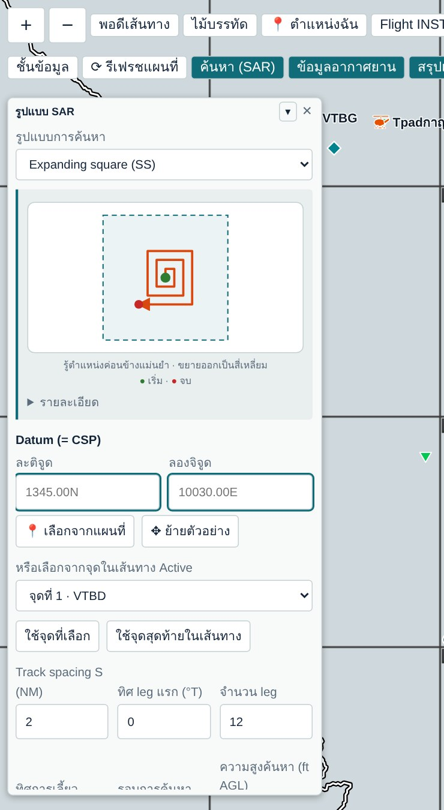
ภาพที่ 11 แผง “รูปแบบ SAR” (ปุ่ม ค้นหา (SAR))
รูปแบบที่เลือกได้ 8 แบบ
Expanding square (SS)
Sector search (VS)
Track line – return (TSR)
Track line – non-return (TSN)
Parallel sweep (PS)
Creeping line (CS)
Creeping line coordinated (CSC)
Contour search (OS)
แต่ละรูปแบบมีช่องกรอกต่างกัน เช่น Track spacing (NM), ทิศ leg แรก (°T), จำนวน leg, ทิศการเลี้ยว, รอบการค้นหา, ความสูงค้นหา (ft AGL) และ Sweep width (ไม่บังคับ) แอปแสดงเฉพาะช่องที่รูปแบบนั้นใช้
ขั้นตอน
เปิดแผง รูปแบบ SAR เลือกรูปแบบการค้นหา ดูตัวอย่างและรายละเอียดในกรอบ
กำหนด Datum (= CSP) โดยพิมพ์ละติจูด/ลองจิจูด หรือกด เลือกจากแผนที่ หรือเลือกจากจุดในเส้นทาง Active แล้วกด ใช้จุดที่เลือก / ใช้จุดสุดท้ายในเส้นทาง
ใส่ Track spacing ทิศ leg แรก จำนวน leg ความสูง ฯลฯ ตัวอย่างบนแผนที่เปลี่ยนตาม ลากตัวอย่างหรือกด ✥ ย้ายตัวอย่าง เพื่อวางที่ตำแหน่งใหม่
เลือก “เมื่อใส่ลงเส้นทาง” ว่า แทนที่จุดเดิมทั้งหมด หรือ ต่อท้ายจุดเดิม (เช่น ฐาน → CSP)
กด ใส่เป็นเส้นทาง Active แอปสร้างจุด (เช่น SS01, SS02 …) พร้อมพื้นที่ค้นหา และข้อความยืนยันที่ด้านล่างจอ ปุ่ม ลบพื้นที่ SAR ลบพื้นที่ที่สร้าง
ตั้งชื่อแล้วกด บันทึกเส้นทางค้นหา เก็บไว้ในแท็บ “เส้นทางค้นหาที่เก็บไว้” (ซิงก์กับชีตเมื่อกรอกรหัสซิงก์)
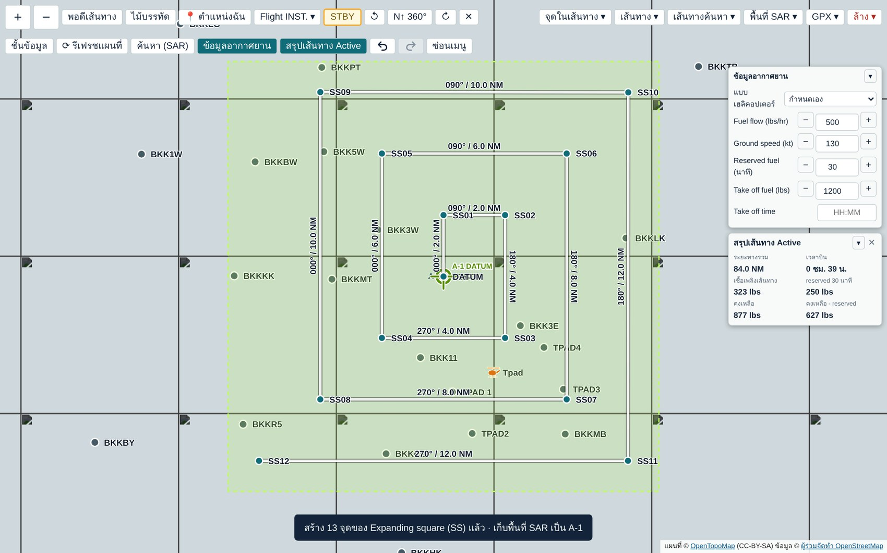
ภาพที่ 12 ผลของรูปแบบ Expanding square บนแผนที่ พร้อมพื้นที่ค้นหา (กรอบสีเขียว) และสรุปเส้นทางที่คำนวณให้
9 เครื่องจำลอง SIM และเครื่องวัด HSI, RMI, FMS
ใช้ฝึกบินตามเส้นทางที่วางไว้ในโหมดเต็มจอ กดปุ่ม Flight INST. ▾ แล้วเลือก RMI , HSI , FMS หรือ SIM เปิดได้พร้อมกันหลายตัว ลากหัวกล่องเพื่อย้ายตำแหน่งได้
ภาพที่ 13 เปิด SIM, HSI, FMS และ RMI พร้อมกันขณะจำลองการบินตามเส้นทาง (ซ้ายบน SIM, ซ้ายล่าง HSI, กลาง FMS, ขวาล่าง RMI) 9.1 ขั้นตอนฝึกบินจำลอง
วางเส้นทางให้มีตั้งแต่ 2 จุด ตั้งแบบอากาศยาน ความเร็ว และเชื้อเพลิง (หัวข้อ 3)
เปิดโหมดเต็มจอ → Flight INST. ▾ → SIM ตั้ง SPD แล้วกด ▶ RUN
เปิด HSI , FMS , RMI ตามต้องการ
กดปุ่ม STBY เป็น NAV เพื่อบินไปยังจุดแรกของเส้นทาง Active สามเหลี่ยมสีฟ้า (MY POS) คือตำแหน่ง ฮ. จำลอง มีเส้นประนำหน้า โค้งตามทิศเลี้ยว
เลือกจุดถัดไปด้วยปุ่ม ◀ ▶ ใน HSI/RMI หรือใช้ Direct to ใน FMS และกด ■ STOP เมื่อจบ
ทดสอบแล้วอย่างไร การทำงานของ SIM/HSI/FMS ผ่านการทดสอบอัตโนมัติด้วยเบราว์เซอร์จำลอง ผู้ใช้ยืนยันว่า iPad ไม่ค้างและ PC ลื่นไหลในรุ่น 4.1.4 ยังไม่ได้ทดสอบกับ GPS หรืออากาศยานจริง
9.2 SIM (จำลองการบิน)
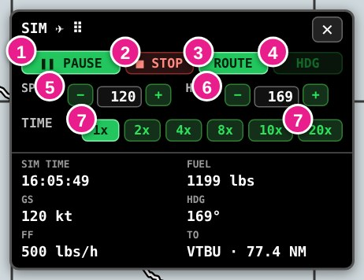
ภาพที่ 14 กล่อง SIM
▶ RUN / ❚❚ PAUSE เริ่ม/หยุดชั่วคราว■ STOP หยุดและออกจากการจำลองROUTE Autopilot บินตามเส้นทางHDG Autopilot คงทิศ (HDG) ที่ตั้งไว้ ปุ่มที่ไม่ได้เลือกจะสีจางกว่าSPD kt ความเร็ว ปรับทีละ 5 ktHDG ° ทิศ ปรับทีละ 1°TIME เร่งเวลา 1x / 2x / 4x / 8x / 10x / 20x
ส่วนล่างของกล่องแสดง SIM TIME, FUEL (เชื้อเพลิงคงเหลือ), GS, HDG, FF และ TO (จุดที่กำลังไป พร้อมระยะ NM) ดับเบิลคลิกที่กล่อง SIM เพื่อขยายกล่องได้ และมีช่องใส่ Fuel REM. สำหรับตั้งเชื้อเพลิงคงเหลือ เมื่อเลี้ยว Autopilot ใช้อัตราเลี้ยวคงที่ 3°/วินาที และมีเวลานำหน้าการเลี้ยวที่ปรับตามมุมเลี้ยว
9.3 HSI และ RMI
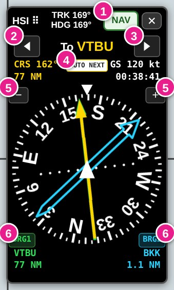
ภาพที่ 15 HSI
NAV / STBY สถานะนำทาง (ปุ่มเดียวกับบนแถบเครื่องมือ)◀ เลือกจุดก่อนหน้า▶ เลือกจุดถัดไปAUTO NEXT เข้าใกล้จุดภายใน 0.2 NM แล้วเลื่อนไปจุดถัดไปอัตโนมัติ− / + ปรับ Course (CRS) เองBRG1 / BRG2 เปิด/ปิดเข็ม Bearing 1 และ 2
HSI แสดง “To” จุดที่กำลังไป, TRK/HDG, CRS (leg course), ระยะ NM, GS, เวลาถึง, เข็มทิศ และ CDI Autopilot จะบินเข้าเส้นให้ CDI เป็น 0 ถ้าหลุดเส้นทางให้ดู CDI แล้วปรับกลับเข้าเส้น
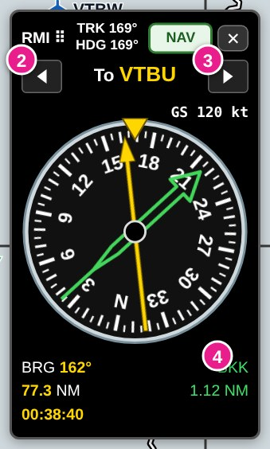
ภาพที่ 16 RMI
NAV / STBY สถานะนำทาง◀ ▶ เลือกจุดก่อนหน้า/ถัดไป เส้นทาง Autopilot เปลี่ยนไปยังจุดที่เลือกทันทีเลือกจุด แตะเพื่อเลือกจุดที่เข็มสีเขียวชี้ (VOR / Airport ฯลฯ)
RMI แสดง BRG และระยะ NM ไปยังจุดที่เลือก และเวลาถึง เข็มทิศหมุนต่อเนื่องตามทิศของ ฮ. จำลอง
9.4 FMS
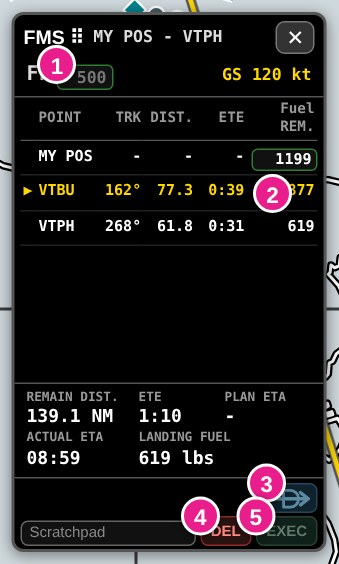
ภาพที่ 17 ตาราง FMS
FF อัตราสิ้นเปลืองที่ใช้ใน SIM แก้ได้จากช่องนี้แถวจุด POINT, TRK (ทิศ), DIST. (ระยะ NM), ETE (เวลา), Fuel REM. (เชื้อเพลิงคงเหลือ) แถวบนสุดคือ MY POS (ตำแหน่งปัจจุบัน) แตะแถวเพื่อเลือกจุดDirect to (D→) เลือก แล้วแตะจุดที่ต้องการ แล้วกด EXEC เพื่อบินตรงไปจุดนั้นDEL ลบจุดที่เลือกออกจากเส้นทางEXEC ยืนยันคำสั่ง Direct to หรือการแทรกจุด (ช่อง Scratchpad ใช้พิมพ์ชื่อจุดที่จะแทรก)
ส่วนล่างของ FMS แสดง REMAIN DIST., ETE, PLAN ETA, ACTUAL ETA และ LANDING FUEL สามารถ Direct to, แทรก หรือลบจุดขณะ SIM ทำงานได้ เมื่อกด Direct to แบบข้ามจุด เส้นทางเป็นเส้นตรงจากตำแหน่งปัจจุบัน และแอปคำนวณให้เลี้ยวเข้าตัดเส้นทางด้วยส่วนโค้ง
สรุปประโยชน์สำหรับการฝึก ใช้ซ้อมเส้นทางจริงก่อนออกบิน ดูเวลาและเชื้อเพลิงที่เหลือตามจุดต่างๆ ฝึกอ่าน HSI/RMI และฝึกใช้ Direct to / แทรก / ลบจุดโดยไม่ต้องบินจริง
10 เก็บ ส่งออก และเครื่องมือเสริม
10.1 เส้นทางที่เก็บไว้
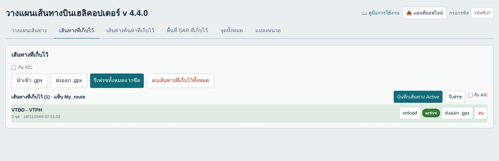
ภาพที่ 18 แท็บ “เส้นทางที่เก็บไว้” หลังกด “บันทึกเส้นทาง” (หรือ “บันทึกเส้นทาง Active” ในแท็บนี้) เส้นทางจะอยู่ในรายการ ถ้ากรอกรหัสซิงก์ไว้ ข้อความยืนยันจะบอกว่าส่งขึ้นชีตส่วนตัวของผู้ใช้ (แท็บ My_route ของผู้ใช้คนนั้น) ด้วย
ปุ่มโหลด / unload นำเส้นทางมาเป็นเส้นทางที่กำลังวางแผน หรือถอดออกจากแผนที่ ปุ่ม .gpx ส่งออกรายการนั้น ปุ่ม ลบ ต้องกดสองครั้งเพื่อยืนยันตัวเลือก กับ A/C ถ้าติ๊กไว้ เมื่อโหลดเส้นทาง แอปจะใส่ข้อมูลอากาศยานที่บันทึกไว้กับเส้นทางนั้นกลับมาด้วย (แบบ ความเร็ว เชื้อเพลิง เวลาออกบิน)
ปุ่ม รีเฟรชทั้งหมดจากชีต อ่านรายการทั้งหมดจากชีตอีกครั้ง (จุดร่วม จุดของฉัน เส้นทาง เส้นทางค้นหา พื้นที่ SAR) ปุ่มด้านบนมี นำเข้า/ส่งออก .gpx และ “ลบเส้นทางที่เก็บไว้ทั้งหมด”
แท็บ เส้นทางค้นหาที่เก็บไว้ (ชีต SAR_route ของผู้ใช้) และ พื้นที่ SAR ที่เก็บไว้ ใช้แบบเดียวกัน
เมื่อคลิกที่เส้นทาง เส้นทางค้นหา หรือพื้นที่บนแผนที่ จะมีกล่อง “รายละเอียดสิ่งที่เลือก” มีปุ่ม ซ่อน, unload, active และบันทึก กับปุ่มจัดการ ได้แก่ ✎ แก้ไข (ลากจุดเพื่อย้าย ลากที่เส้นเพื่อแทรกจุด แตะสองครั้งที่จุดเพื่อลบ ต้องเหลืออย่างน้อย 2 จุด) และ ✥ ย้าย (ย้ายพื้นที่ค้นหาทั้งกล่อง) ตามคู่มือรุ่น 3.4.1
10.2 นำเข้า / ส่งออก GPX
เมนู GPX ▾ ในโหมดเต็มจอ หรือปุ่ม “ส่งออก .gpx” / “นำเข้า .gpx” ในหน้าหลัก ใช้เก็บสำรองเส้นทางเป็นไฟล์ .gpx หรือนำไปใช้กับเครื่อง GPS และแอปอื่น พื้นที่ค้นหาก็ส่งออก/นำเข้าเป็น .gpx ได้
สำรองข้อมูลเป็นประจำ เส้นทางที่บันทึกเก็บในเบราว์เซอร์ของเครื่องที่ใช้ ถ้าเปลี่ยนเครื่อง เปลี่ยนเบราว์เซอร์ ใช้โหมดส่วนตัว หรือล้างข้อมูลเบราว์เซอร์ เส้นทางจะหาย ควรส่งออก GPX เก็บไว้
10.3 จุดทั้งหมด
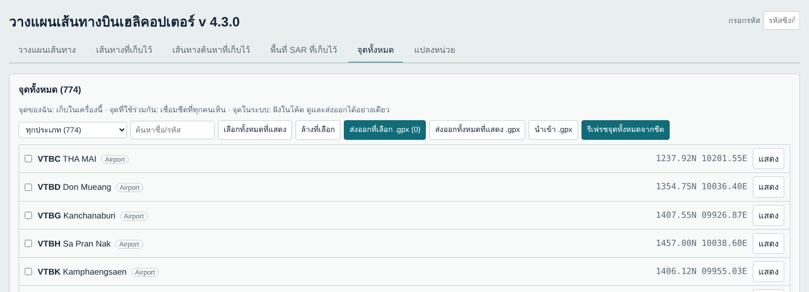
ภาพที่ 19 แท็บ “จุดทั้งหมด (774)” แสดงรายการจุดทั้งหมด กรองตามประเภท ค้นหาชื่อ/รหัส ติ๊กเลือกแล้ว ส่งออกที่เลือก .gpx หรือ ส่งออกทั้งหมดที่แสดง .gpx ได้ ปุ่ม แสดง พาไปดูจุดนั้นบนแผนที่ จุดของฉันเก็บในเครื่อง (และชีตส่วนตัวของตนเมื่อกรอกรหัสซิงก์) จุดร่วมเชื่อมกับชีตที่ทุกคนเห็น จุดในระบบฝังอยู่ในโค้ด ปุ่ม รีเฟรชจุดทั้งหมดจากชีต โหลดจุดร่วมและจุดของฉันใหม่
10.4 แปลงหน่วย
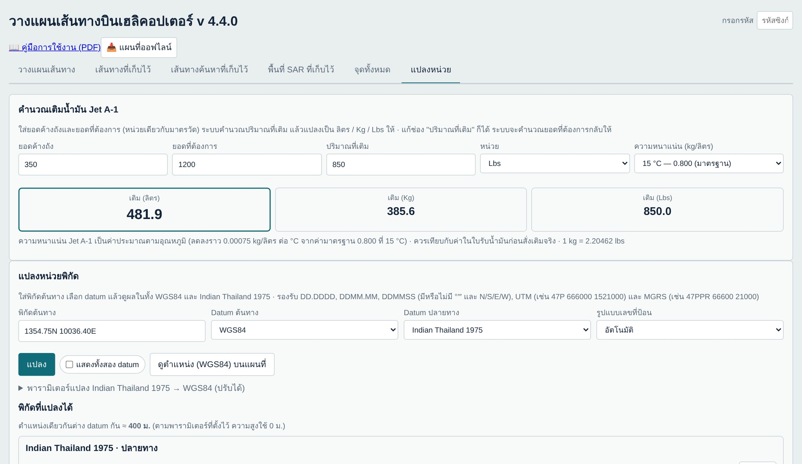
ภาพที่ 20 แท็บ “แปลงหน่วย” (ใส่ยอดค้างถัง 350, ยอดที่ต้องการ 1200 ได้ปริมาณที่เติม 850 lbs)
คำนวณเติมน้ำมัน Jet A-1 ใส่ยอดค้างถังและยอดที่ต้องการ (หน่วยเดียวกับมาตรวัด) ระบบคำนวณปริมาณที่เติม แล้วแปลงเป็น ลิตร / Kg / Lbs ใช้ความหนาแน่น 0.800 kg/L ที่ 15 °C เป็นค่ามาตรฐาน ปรับตามอุณหภูมิได้ ควรเทียบกับค่าในใบรับน้ำมันก่อนสั่งเติมจริงแปลงหน่วยพิกัด ใส่พิกัดต้นทาง (เช่น 13.7563, 100.5018 หรือ 1345.38N 10030.11E) เลือก datum (WGS84 หรือ Indian Thailand 1975) แล้วกด แปลง รองรับ DD.DDDD, DDMM.MM, DDMMSS, UTM และ MGRS มีปุ่ม “ดูตำแหน่ง (WGS84) บนแผนที่”
10.5 Flight Log สำหรับพิมพ์
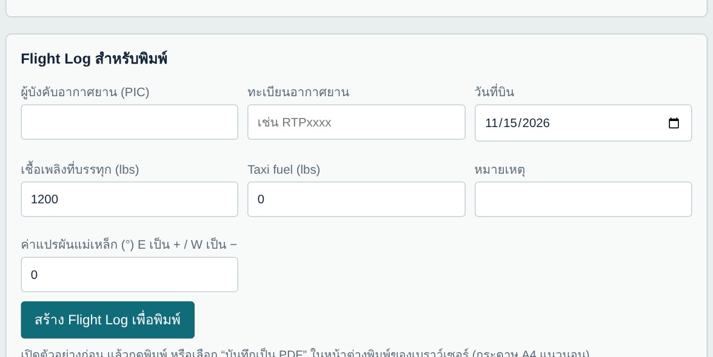
ภาพที่ 21 ฟอร์ม Flight Log ในหน้าหลัก
กรอก ผู้บังคับอากาศยาน (PIC), ทะเบียนอากาศยาน, วันที่บิน, เชื้อเพลิงที่บรรทุก, Taxi fuel, หมายเหตุ และค่าแปรผันแม่เหล็ก (E เป็น +, W เป็น −) แล้วกด สร้าง Flight Log เพื่อพิมพ์
หน้าตัวอย่างมีปุ่ม ดาวน์โหลด PDF , ไฟล์ .html สำหรับพิมพ์ , พิมพ์ และ ปิด (กระดาษ A4 แนวนอน)
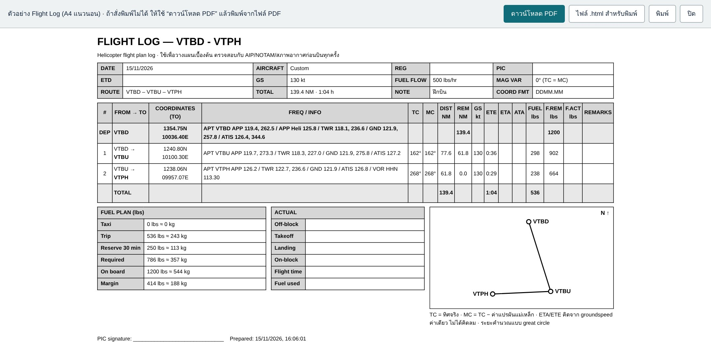
ภาพที่ 22 ตัวอย่างหน้า Flight Log (ข้อมูลในภาพเป็นเส้นทางตัวอย่าง VTBD – VTBU – VTPH) ตารางแสดงจุดต้นทาง/ปลายทาง พิกัด ความถี่ TC (ทิศจริง) MC (ทิศแม่เหล็ก) ระยะ เวลา เชื้อเพลิง ช่องว่างสำหรับบันทึกจริง (ETA, ATA, F.ACT, REMARKS) แผนเชื้อเพลิง ตาราง ACTUAL ภาพร่างเส้นทาง และช่องลงชื่อ PIC
10.6 จุดร่วม จุดของฉัน และการซิงก์กับชีต
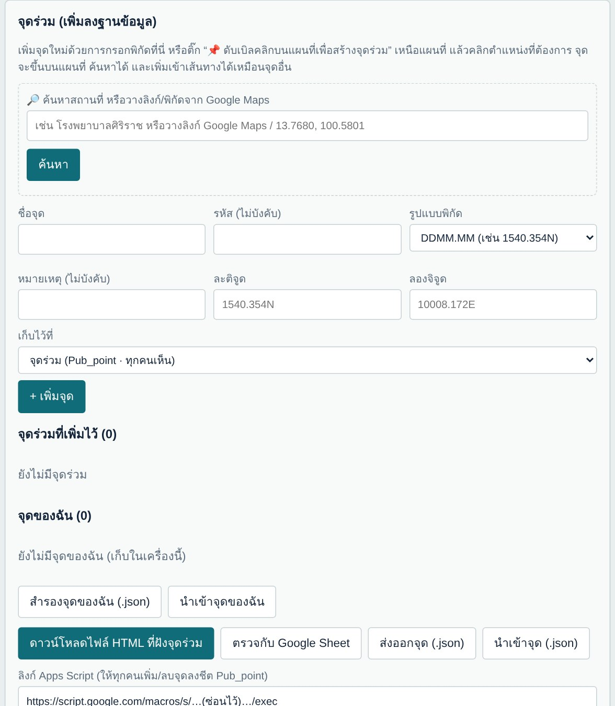
ภาพที่ 23 การ์ด “จุดร่วม (เพิ่มลงฐานข้อมูล)” จุดของฉัน และปุ่มสำรอง/ส่งออก (ลิงก์ Apps Script ถูกซ่อนในภาพ)
จุดร่วม เพิ่มโดยพิมพ์พิกัด หรือค้นหาสถานที่/วางลิงก์ Google Maps แล้วกด “+ เพิ่มจุด” เลือกที่เก็บเป็น “จุดร่วม (Pub_point · ทุกคนเห็น)” จุดที่เพิ่มจะลงชีตทันที ไม่ต้องใช้รหัส ผู้ใช้ท่านอื่นเห็นหลังกดรีเฟรชหรือโหลดหน้าใหม่จุดของฉัน เก็บในเครื่องนี้ มีปุ่ม สำรองจุดของฉัน (.json) / นำเข้า / ส่งออก / นำเข้าจุด (.json)รหัสซิงก์รายบุคคล ผู้ดูแลออกรหัสให้ผู้ใช้แต่ละคนคนละรหัส กรอกที่ช่อง “กรอกรหัส” มุมขวาบน (หรือช่อง “รหัสซิงก์ชีต” ในการ์ดนี้) แล้วกด บันทึกรหัส เมื่อถูกต้อง จะเห็น “👤 ชื่อของท่าน” และ จุดของฉัน / เส้นทาง / เส้นทางค้นหา / พื้นที่ SAR จะซิงก์กับชีตส่วนตัวของท่านเอง ผู้ใช้คนอื่นมองไม่เห็นข้อมูลนี้ รวมทั้งผู้ดูแลก็มีแท็บแยกของตนเช่นกันเปลี่ยนรหัส ถ้าผู้ดูแลเปลี่ยนรหัสของท่าน ข้อมูลเดิมยังอยู่ครบ ให้กรอกรหัสใหม่แทนรหัสเก่า (ใช้เวลาประมาณ 2 นาทีก่อนรหัสใหม่มีผล)ดาวน์โหลดไฟล์ HTML ที่ฝังจุดร่วม ใช้สร้างไฟล์ใหม่ที่ฝังจุดร่วมล่าสุดไว้ในตัวไฟล์
รหัสซิงก์และรหัสปลดล็อก URL ตัวกลางเป็นความลับ อย่าส่งต่อ อย่าถ่ายภาพหน้าจอที่มีรหัสหรือลิงก์ Apps Script เผยแพร่ ถ้าสงสัยว่ารหัสหลุด ให้แจ้งผู้ดูแลเปลี่ยนรหัสทันที
เมื่อย้ายที่อยู่เว็บ เบราว์เซอร์จำค่าแยกตามที่อยู่เว็บ (origin) ถ้าเปิดแอปจากลิงก์ใหม่ (เช่น เปลี่ยนจาก Google Sites เป็น GitHub Pages) ต้องกรอกรหัสซิงก์ และปลดล็อก ADS-B ใหม่หนึ่งครั้ง ส่วนเส้นทางที่เก็บไว้เฉพาะในเครื่องจะไม่ตามมา ให้ส่งออก GPX/สำรองจุดของฉันก่อนย้าย
11 ภูมิประเทศ: TAWS กราฟความสูง และ FLTA
แอปใช้ข้อมูลความสูงภูมิประเทศจาก Copernicus DEM GLO-30 สำหรับพื้นที่ในประเทศไทย และ AWS Terrain Tiles นอกประเทศไทย เพื่อระบายสีภูมิประเทศเทียบกับความสูงบิน วาดกราฟความสูงตามเส้นทาง และเตือนภูมิประเทศข้างหน้า (FLTA) ถ้าต้องการใช้ตอนไม่มีอินเทอร์เน็ต ให้ดาวน์โหลดเก็บไว้ก่อน (Menu → 📥 Download map/TAWS หรือปุ่มเดียวกันในกล่องชั้นข้อมูล ดูหัวข้อ 1.3)
เครื่องช่วยเตือนเท่านั้น TAWS และ FLTA ในแอปนี้ไม่ใช่ TAWS ที่ได้รับการรับรอง ความสูงเป็นค่าพื้นดินโดยประมาณ ไม่รวมสิ่งกีดขวาง (เสา สายไฟ อาคาร ต้นไม้) ใช้ประกอบการวางแผนและเพิ่มความตระหนักรู้เท่านั้น ห้ามใช้แทนการมองนอกเครื่อง แผนที่ทางการ และระเบียบการบิน
11.1 TAWS (ระบายสีภูมิประเทศเทียบกับความสูงบิน)
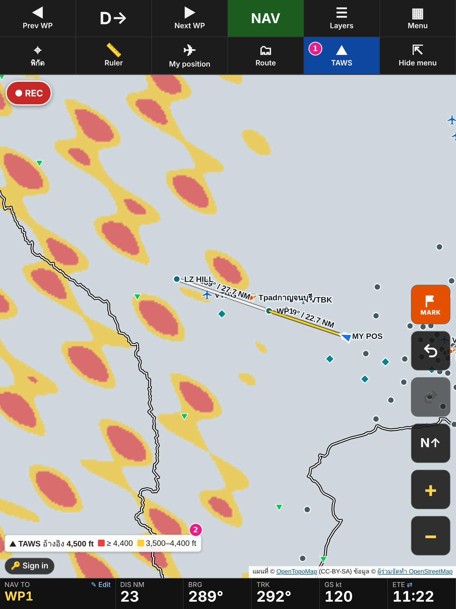
ภาพที่ 24 TAWS ในโหมดบิน (ความสูงบิน 4,500 ft · ภูมิประเทศจำลอง) TAWS เปิด/ปิดการระบายสี (โหมดบิน: แถวบน · แผนที่เต็มจอ: ⛰ TAWS)แถบ TAWS กล่องบอกความสูงอ้างอิงและช่วงสี ในโหมดบินเหลือบรรทัดเดียว สถานะกำลังโหลด/ออฟไลน์ต่อท้ายบรรทัดเดียวกันสีแดง ภูมิประเทศสูงกว่าหรือใกล้ความสูงบิน (ตั้งแต่ ความสูงบิน − 100 ft ขึ้นไป) สีเหลือง ต่ำกว่าความสูงบินไม่เกินค่า "แถบเหลือง" (ค่าเริ่มต้น 1,000 ft) ตั้งค่าในกล่องชั้นข้อมูล FLY ALT (ความสูงบิน), แถบเหลือง, ความจางของสี (จางได้ถึง 5%) และ ใช้ความสูง GPS แทนค่าที่ตั้งเอง 11.2 กราฟความสูงตามเส้นทาง
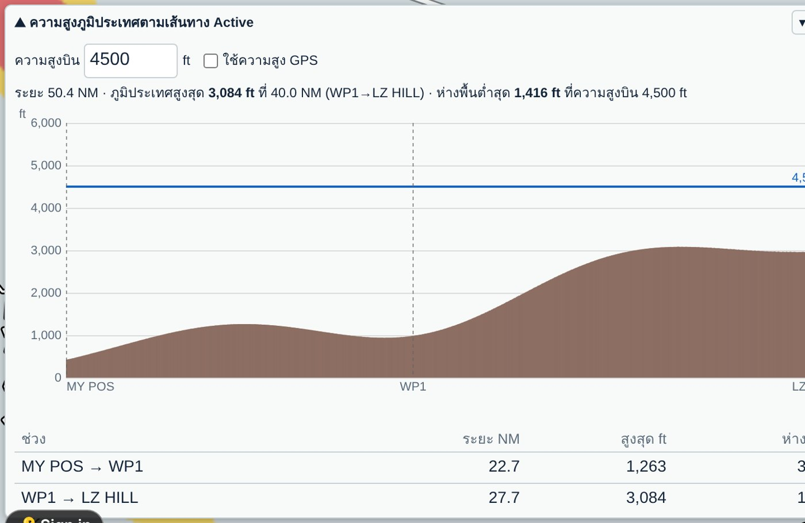
ภาพที่ 25 กราฟความสูงภูมิประเทศตามเส้นทาง Active (ภูมิประเทศจำลอง) เปิดจากปุ่ม 📈 กราฟความสูง (แผนที่เต็มจอ) หรือ Menu → Terrain profile (โหมดบิน) กราฟแสดงความสูงภูมิประเทศตลอดเส้นทาง Active เส้นสีน้ำเงินคือความสูงบิน บรรทัดสรุปบอกภูมิประเทศสูงสุด ตำแหน่ง และระยะห่างพื้นต่ำสุด ตารางด้านล่างสรุปรายช่วง ใส่ความสูงบินได้ในกล่องนี้ (ค่าเดียวกับ FLY ALT) กราฟนี้ไม่รวมสิ่งกีดขวาง
11.3 FLTA (เตือนภูมิประเทศข้างหน้า)
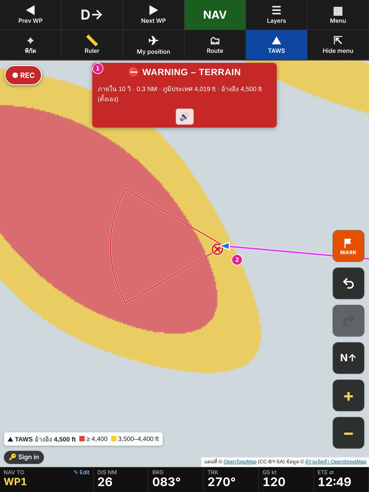
ภาพที่ 26 FLTA เตือน WARNING พร้อมพัดมองล่วงหน้า (ภูมิประเทศจำลอง · GPS จำลอง) แถบเตือน CAUTION (สีเหลือง) เมื่อจะถึงภูมิประเทศที่สูงกว่า ความสูงบิน − 500 ft ภายใน 20 วินาที และ WARNING (สีแดง) ภายใน 10 วินาที บอกเวลา ระยะ และความสูงพื้น มีเสียงพูดภาษาอังกฤษ (ปุ่มลำโพงเปิด/ปิดเสียง) แตะแถบเพื่อย่อเป็นไอคอน TERRAIN มุมล่างขวา แถบจะกลับมาเมื่อระดับเตือนสูงขึ้นพัดมองล่วงหน้า ข้างละ 30° ตามแนว Track ความยาวที่แสดงเลือกได้ 2 / 5 / 10 NM ในกล่องชั้นข้อมูล (ไม่มีผลต่อการเตือน) แอปตรวจเส้นทางเลี้ยวต่อเนื่องได้ไม่เกิน 80° ด้วยเปิดจาก Menu → ⚠ FLTA หรือในกล่องชั้นข้อมูล ทำงานเมื่อมีตำแหน่งจาก GPS หรือ SIM และความเร็วตั้งแต่ 20 kt ขึ้นไป ตรวจทุก 1 วินาที ความสูงอ้างอิงคือ FLY ALT หรือความสูงจาก GPS ถ้าเลือก "ใช้ความสูง GPS" (ความสูง GPS อาจคลาดเคลื่อนได้มาก) 11.4 ความสูงตรงเป้าชี้
เมื่อเปิด พิกัด (โหมดบิน) หรือกล่องพิกัด กล่องพิกัดจะต่อท้ายด้วยความสูงภูมิประเทศ (ft) ณ กากบาทกลางจอ บนคอมพิวเตอร์แสดงตามตำแหน่งเมาส์
12 โหมดบิน (Flight mode)
โหมดบินคือหน้าจอปุ่มใหญ่สำหรับใช้ขณะบินบน iPad, iPhone และโทรศัพท์ Android ในแนวตั้ง ชื่อปุ่มเป็นภาษาอังกฤษ (ยกเว้นปุ่ม พิกัด) เพื่อให้อ่านเร็วและกดง่ายขณะบิน
12.1 เข้าและออกจากโหมดบิน
เปิดแอป บน iPad / iPhone จะเข้าโหมดบินทันที บนคอมพิวเตอร์จะเปิดแผนที่เต็มจอ รหัส ถ้ายังไม่ได้ใส่รหัสในเครื่อง จะมีกล่องใส่รหัสขึ้นมาตอนเปิด ชื่อผู้ใช้แสดงที่ป้ายมุมล่างซ้าย ถ้ายังไม่ได้ใส่รหัสจะเป็น 🔑 Sign in แตะเพื่อใส่หรือเปลี่ยนรหัส เข้าเอง ปุ่ม ✈ โหมดบิน ในแถบ ☰ เมนู (แผนที่เต็มจอที่ซ่อนเมนู) หรือ Flight INST. ▾ · ออก Menu → ✕ Exit flight mode 12.2 ปุ่มบนหน้าจอ
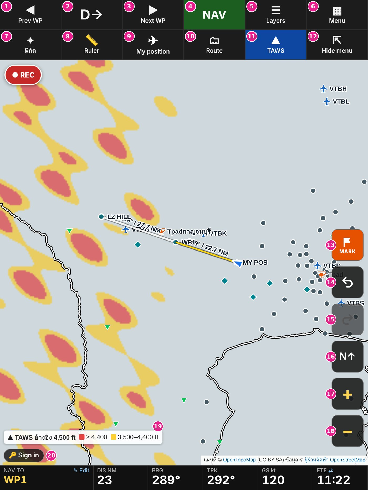
ภาพที่ 27 หน้าจอโหมดบินบน iPad แนวตั้ง (GPS และภูมิประเทศจำลอง) Prev WP เลือกจุดก่อนหน้าในเส้นทางD→ หน้าต่าง Direct to เลือกจุดที่จะบินตรงไปNext WP เลือกจุดถัดไปNAV / STBY สถานะนำทาง (NAV = กำลังนำทาง)Layers กล่องชั้นข้อมูล (มีปุ่ม ✕ ปิด)Menu เมนูรวม (หัวข้อ 12.4)พิกัด กากบาทกลางจอ + กล่องพิกัดและความสูงRuler ไม้บรรทัด (บนโทรศัพท์กล่องไม้บรรทัดอยู่ด้านล่างจอ)My position กลับไปที่ตำแหน่งปัจจุบันRoute เส้นทางที่บันทึกไว้TAWS ระบายสีภูมิประเทศ (หัวข้อ 11.1)Hide menu ซ่อนปุ่ม (ปุ่ม ☰ เรียกกลับ)MARK สร้างจุด Mark ที่ตำแหน่งปัจจุบัน (หัวข้อ 13.2)Undo ย้อนการแก้เส้นทางRedo ทำซ้ำN↑ / TRK↑ / HDG↑ สลับ North up → Track up → Heading up (Heading up ใช้เข็มทิศ เปิดที่ GPS / Position)+ ซูมเข้า− ซูมออกแถบ TAWS ความสูงอ้างอิงและช่วงสีป้ายชื่อผู้ใช้ แตะเพื่อใส่/เปลี่ยนรหัส12.3 แถบตัวเลขด้านล่าง
ภาพที่ 28 แถบตัวเลขด้านล่างจอ NAV TO จุดที่กำลังนำทางไป แตะช่องนี้ (✎ Edit) เพื่อเปิด/ปิดกล่องแก้เส้นทางDIS NM ระยะถึงจุดBRG ทิศไปยังจุดTRK ทิศทางการเคลื่อนที่จาก GPS ถ้าเลือก Heading up ช่องนี้จะเปลี่ยนเป็น HDG (ค่าหัวเครื่อง)GS kt ความเร็วพื้นETE ⇄ ETA เวลาที่เหลือ แตะเพื่อสลับเป็น ETA (เวลาที่จะถึงตามนาฬิกาเครื่อง) เครื่องจำค่าที่เลือกไว้12.4 Menu
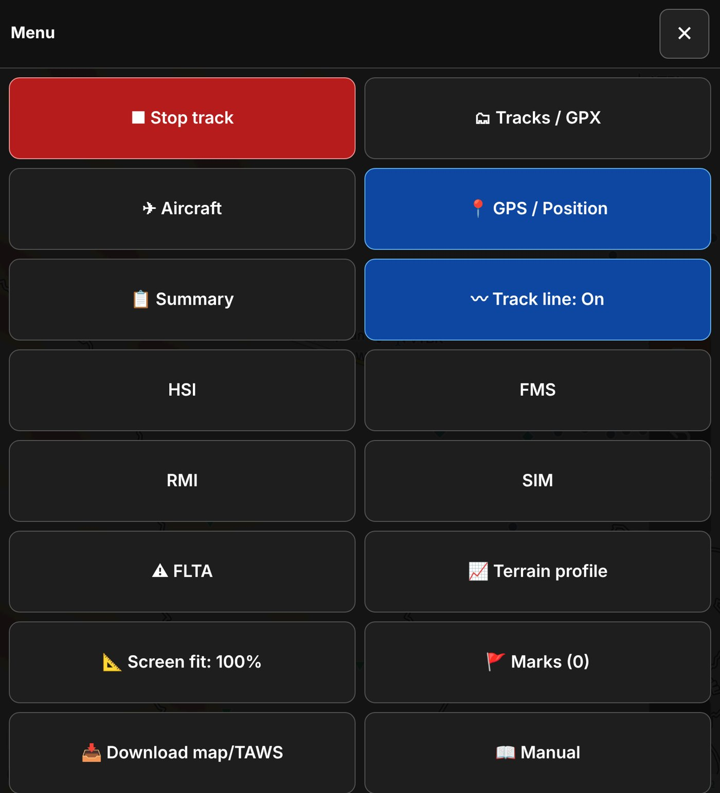
ภาพที่ 29 เมนูในโหมดบิน Record / Stop track เริ่ม/หยุดบันทึก Track (หัวข้อ 13.1)Tracks / GPX รายการ Track ส่งออก GPXAircraft · Summary เปิด/ปิดกล่องข้อมูลอากาศยานและสรุปเส้นทางGPS / Position ใช้ GPS, Follow, Compass, Center mapTrack line แสดง/ซ่อนเส้น Track บนแผนที่HSI · FMS · RMI · SIM เครื่องวัดและเครื่องจำลอง (หัวข้อ 9)FLTA · Terrain profile หัวข้อ 11Screen fit ย่อพื้นที่จอ 100–84% สำหรับเครื่องที่แสดงเกินจอMarks รายการจุด Mark (หัวข้อ 13.2)Download map/TAWS ดาวน์โหลดแผนที่และข้อมูลความสูงเก็บไว้ใช้ออฟไลน์Manual เปิดคู่มือนี้ในแอปได้ตลอดเวลา (ใช้ออฟไลน์ได้เมื่อแอปเก็บคู่มือไว้แล้ว)Exit flight mode ออกจากโหมดบิน12.5 หน้าต่าง Direct to และ GPS / Position
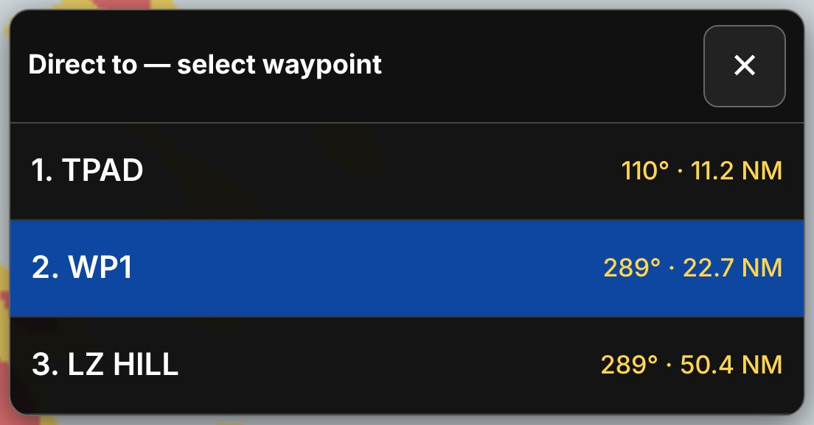
ภาพที่ 30 หน้าต่าง Direct to (แตะปุ่ม D→) รายการจุดในเส้นทางพร้อมทิศและระยะจากตำแหน่งปัจจุบัน แตะจุดที่ต้องการเพื่อนำทางตรงไป ต้องมีตำแหน่งปัจจุบัน (GPS หรือ SIM)
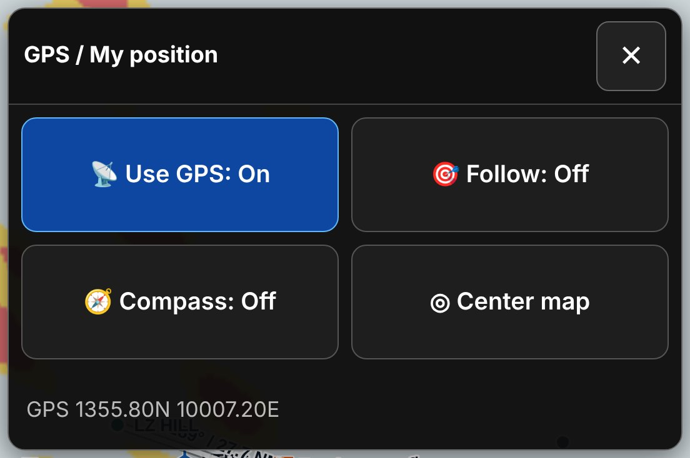
ภาพที่ 31 หน้าต่าง GPS / My position (Menu → GPS / Position) Use GPS เปิด/ปิด GPS · Follow แผนที่เลื่อนตามเครื่อง · Compass ใช้เข็มทิศ (จำเป็นสำหรับ Heading up) · Center map เลื่อนแผนที่ไปที่ตำแหน่งปัจจุบัน
12.6 กล่อง Aircraft และ Summary
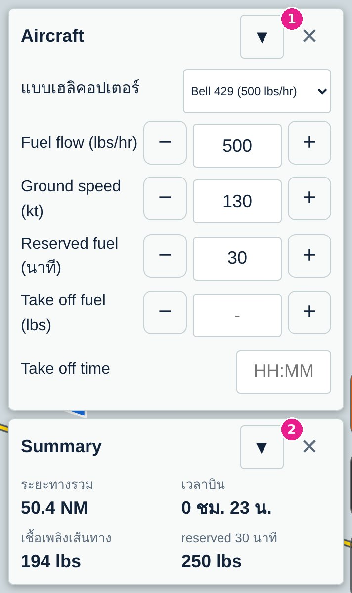
ภาพที่ 32 กล่อง Aircraft และ Summary ในโหมดบิน ✕ ปิด Aircraft ปิดกล่อง Aircraft (เปิดกลับที่ Menu → Aircraft)✕ ปิด Summary ปิดกล่อง Summaryในโหมดบินกล่องทั้งสองใหญ่ขึ้น ตัวอักษรใหญ่ ปุ่ม + / − และปุ่มปิดขนาด 44 px และวางหลบคอลัมน์ปุ่มขวา ปุ่ม ▾ ใช้ย่อกล่อง ตั้งแต่ v4.7.6 ชื่อ "สรุปเส้นทาง Active" เปลี่ยนเป็น Summary และใน v4.7.7 "ข้อมูลอากาศยาน" เปลี่ยนเป็น Aircraft ทั้งแอป
12.7 ซูม หมุน และการใช้หลายอุปกรณ์
ซูมสองนิ้ว ภาพย่อ/ขยายต่อเนื่องตามนิ้ว เมื่อยกนิ้วแผนที่จะเข้าระดับซูมที่ใกล้ที่สุดแล้วโหลดภาพคมชัด ระหว่างนั้นภาพเดิมค้างไว้จึงไม่กะพริบ หมุนแผนที่ บิดสองนิ้วเกิน 12° หรือใช้ปุ่ม N↑ / TRK↑ / HDG↑ โทรศัพท์ Android ถ้าจอแสดงเกินขอบ แอปจะปรับให้พอดีส่วนที่มองเห็นเอง ถ้ายังเกินให้ตั้ง Menu → Screen fit · ถ้าเปิดด้วย Samsung Internet ในโหมดมืด สีแผนที่และตัวหนังสืออาจผิดเพี้ยน แนะนำให้เปิดด้วย Chrome หรือปิดโหมดมืดของเบราว์เซอร์
13 Track, Mark และ GPX
13.1 บันทึก Track
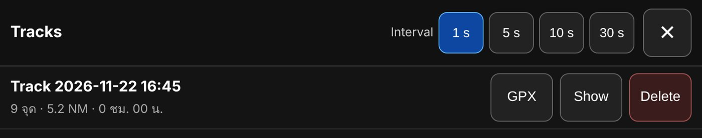
ภาพที่ 33 หน้าต่าง Tracks (Menu → Tracks / GPX) · Track ตัวอย่างจาก GPS จำลอง เริ่มอัตโนมัติ เมื่อความเร็วตั้งแต่ 20 kt ขึ้นไป มุมซ้ายบนจะมีป้าย ● REC (แตะเพื่อเปิด Tracks) หรือเริ่ม/หยุดเองที่ Menu → Record / Stop track ถ้าหยุดเอง แอปจะไม่เริ่มอัตโนมัติอีกจนกว่าจะช้ากว่า 5 kt นาน 2 นาที Interval เก็บจุดทุก 1 / 5 / 10 / 30 วินาที ถ้าปิดแอปแล้วเปิดใหม่ภายใน 30 นาที จะบันทึกต่อใน Track เดิม GPX ส่งออกเป็นไฟล์ .gpx · Show / Shown แสดง Track บนแผนที่ · Delete แตะ 2 ครั้งเพื่อยืนยัน · Track เก็บในเครื่องนี้เท่านั้น 13.2 Mark (สร้างจุดจากตำแหน่งปัจจุบัน)
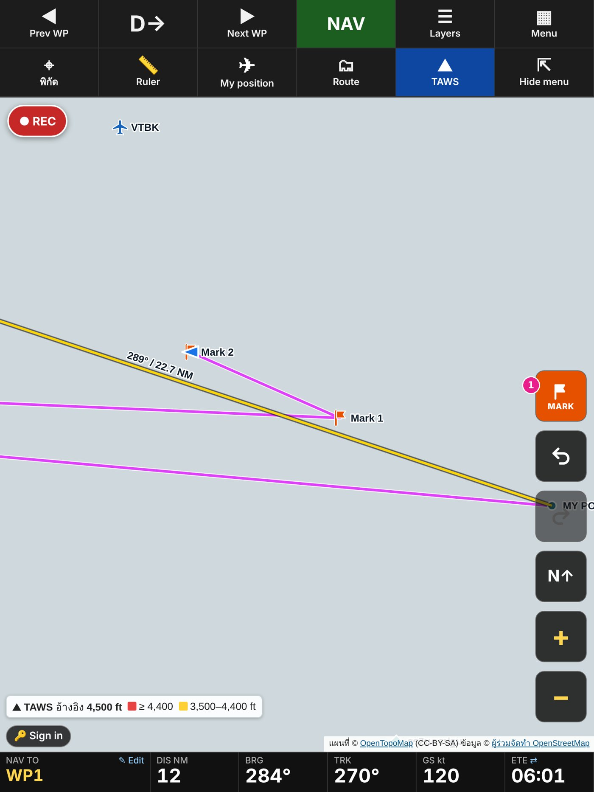
ภาพที่ 34 ปุ่ม MARK และจุด Mark บนแผนที่ (GPS จำลอง) MARK แตะเพื่อสร้างจุดที่ตำแหน่งปัจจุบันทันที ชื่อ Mark 1, Mark 2, Mark 3 … ต่อไปเรื่อยๆ (เริ่ม 1 ใหม่เมื่อลบหมด) แสดงบนแผนที่เป็นธงสีส้ม (หมวด "Mark" ในกล่องชั้นข้อมูล) และพิมพ์ชื่อค้นหาในช่องชื่อจุดได้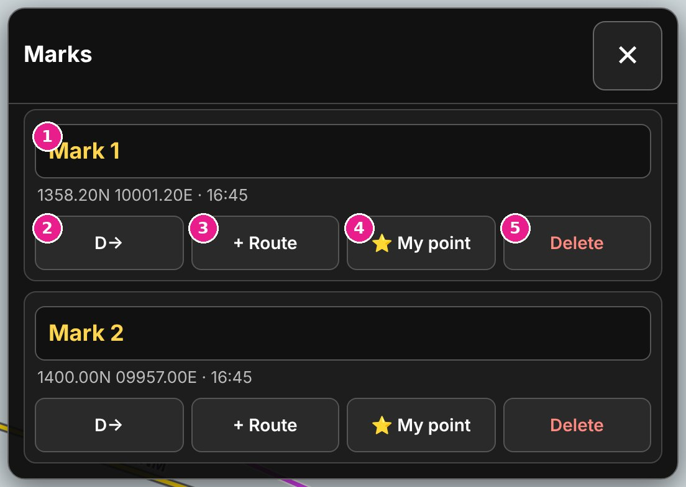
ภาพที่ 35 หน้าต่าง Marks (Menu → Marks) ชื่อ แตะเพื่อเปลี่ยนชื่อD→ Direct to ไปยังจุดนี้+ Route เพิ่มจุดนี้เข้าเส้นทาง⭐ My point บันทึกเป็นจุดของฉัน (ซิงก์ขึ้นชีตถ้าใส่รหัสแล้ว)Delete ลบ แตะ 2 ครั้งเพื่อยืนยันต้องมีตำแหน่งปัจจุบันจาก GPS หรือ SIM ถ้ายังไม่มีตำแหน่ง แอปจะแจ้งให้เปิด GPS และไม่สร้างจุด แตะธง Mark บนแผนที่ มีปุ่ม + เพิ่มเข้าเส้นทาง, Direct to, ⭐ บันทึกเป็นจุดของฉัน และ ลบ Mark Mark เก็บในเครื่องนี้เท่านั้น ไม่ซิงก์ไปเครื่องอื่น ถ้าล้างข้อมูลเว็บไซต์ของเบราว์เซอร์ Mark จะหาย ถ้าต้องการเก็บถาวรหรือใช้บนเครื่องอื่น ให้กด ⭐ My point
14 ปัญหาที่พบบ่อย
อาการ สาเหตุ / วิธีแก้ ออฟไลน์แล้วแผนที่พื้นหลังว่างบางส่วน แผนที่จะขึ้นเฉพาะบริเวณและระดับซูมที่เคยเปิดดู หรือที่ดาวน์โหลดไว้ ลองซูมออกให้ตรงกับระดับที่ดาวน์โหลด หรือเลือกชนิดแผนที่ที่ดาวน์โหลดไว้ ถ้าต้องการเพิ่มให้ดาวน์โหลดพื้นที่นั้นตอนมีอินเทอร์เน็ต (หัวข้อ 1.3) ดาวน์โหลดแผนที่หยุดหรือขึ้น “ล้มเหลว” ตรวจอินเทอร์เน็ต ปิดการล็อกจอ ไม่สลับแอประหว่างโหลด ถ้าพื้นที่เครื่องเต็มจะหยุดเอง ให้ลบพื้นที่เก่าหรือลดขนาด แล้วกด “โหลดต่อ” ที่รายการ (ข้ามแผ่นที่มีแล้ว) ปุ่มแผนที่ออฟไลน์ขึ้นว่าใช้ไม่ได้ ใช้ได้เฉพาะแอปที่เปิดจากลิงก์เว็บ (https) หรือที่ติดตั้งลงหน้าจอโฮม ไม่รองรับไฟล์ที่เปิดผ่าน Pagira หรือเปิดจากเครื่อง ไม่เห็นแผนที่พื้นหลัง ต้องมีอินเทอร์เน็ต ตรวจสัญญาณแล้วกด “รีเฟรชแผนที่” หรือเลือกชนิดแผนที่แบบอื่น ถ้าแผนที่บางแบบขึ้นข้อความโหลดไทล์ไม่ได้ ให้สลับแบบ ไอคอนจุดต่างๆ หายไป เปิดกล่อง “ชั้นข้อมูล” แล้วกด Show All หรือติ๊กประเภทที่ต้องการอีกครั้ง บางชั้นปิดไว้ตามค่าเริ่มต้น เช่น Restrict, ยอดเขา, TADIZ, VOR, Palace, IFR RP ใส่ชื่อจุดแล้วไม่ขึ้นพิกัด ตรวจตัวสะกด (เช่น VTBD) หรือพิมพ์พิกัดเองตามรูปแบบที่เลือกไว้ เช่น 1354.75N / 10036.40E “คงเหลือ” เป็นสีแดง เชื้อเพลิงไม่พอสำหรับเส้นทางนี้ ปรับ Take off fuel หรือเส้นทาง ไม่เห็นช่อง “คงเหลือ” ยังไม่ได้ใส่ Take off fuel METAR/TAF ขึ้นว่าเรียกตัวกลาง Apps Script ไม่ได้ / ตัวกลางแจ้ง error ตรวจอินเทอร์เน็ตก่อน ถ้ายังไม่ได้ ให้ผู้ดูแลตรวจว่าสคริปต์ METAR ถูก Deploy ถูกต้อง (Execute as Me, Who has access: Anyone) METAR/TAF ไม่ใช้รหัสใดๆ METAR/TAF ขึ้น “ยังไม่ได้ตั้งตัวกลาง” ไฟล์ที่เปิดอยู่ไม่มี URL ตัวกลาง METAR ฝังอยู่ ให้ใช้ไฟล์หรือลิงก์เวอร์ชัน 4.2.3 ขึ้นไป เปิดแอปที่ติดตั้งตอนไม่มีสัญญาณแล้วไม่ขึ้น ต้องเคยเปิดจากลิงก์เว็บขณะมีอินเทอร์เน็ตและโหลดซ้ำอย่างน้อยหนึ่งครั้งก่อนติดตั้ง และเปิดจากไอคอนที่ติดตั้งไว้ ถ้าลบไอคอนหรือล้างข้อมูลเว็บไซต์ใน Safari ต้องติดตั้งใหม่ขณะมีอินเทอร์เน็ต (หัวข้อ 1.1) มีไอคอนสัญญาณ Wi-Fi ขีดฆ่าสีแดงที่แถบหัว ขณะนี้ออฟไลน์ METAR/TAF, ADS-B, เรดาร์ฝน และซิงก์ชีตใช้ไม่ได้ ไอคอนหายเองเมื่อกลับมาออนไลน์ ไม่เห็นแถบ “มีเวอร์ชันใหม่” ทั้งที่ผู้ดูแลแจ้งว่ามี เปิดแอปขณะมีอินเทอร์เน็ตแล้วรอสักครู่ (ตรวจตอนเปิดแอปและทุก 30 นาที) ถ้ายังไม่ขึ้น ปิดแอปทั้งหมดแล้วเปิดใหม่ขณะมีอินเทอร์เน็ต กรอกรหัสแล้วขึ้น “รหัสไม่ถูกต้อง” ตรวจตัวพิมพ์เล็ก/ใหญ่และช่องว่างหน้า-หลังรหัส ถ้าถูกแล้วยังไม่ได้ ให้แจ้งผู้ดูแลตรวจว่ารหัสของท่านยังเปิดใช้งานอยู่ ไม่เห็นชื่อ “👤” ที่มุมขวาบน ยังไม่ได้ใส่รหัส หรือรหัสผิด หรือเชื่อมชีตไม่ได้ ให้กดบันทึกรหัสอีกครั้งและตรวจอินเทอร์เน็ต เปลี่ยนที่อยู่เว็บแล้วข้อมูลในหน้าเดิมหาย เบราว์เซอร์จำค่าแยกตามที่อยู่เว็บ ให้กรอกรหัสซิงก์ใหม่ แล้วกดรีเฟรชทั้งหมดจากชีต ข้อมูลที่เคยซิงก์จะกลับมา ส่วนข้อมูลที่อยู่เฉพาะในเครื่อง ให้นำเข้าจากไฟล์สำรอง เส้นทางที่บันทึกหาย ใช้คนละเครื่อง/คนละเบราว์เซอร์ หรือโหมดส่วนตัว หรือล้างข้อมูลเบราว์เซอร์ ให้ส่งออก GPX เก็บเป็นประจำ iPad ค้างเมื่อเปิดหลายเครื่องวัด รุ่น 4.1.4 ขึ้นไปปรับความถี่การวาดตามความแรงเครื่อง หากยังช้า ให้ปิดเครื่องวัดที่ไม่ใช้ หรือซ่อนเมนู iPad วางจุดไม่ได้ ตรวจว่าเปิดตัวเลือกวางจุด (Double click สร้าง) ในกล่องชั้นข้อมูลไว้ และไม่ได้เปิดไม้บรรทัดค้างอยู่ มีหน้าต่าง “🔑 รหัสจุดของฉัน” ใส่รหัสซิงก์ของท่านแล้วกด ตกลง หรือกด “ข้าม” ถ้าไม่ต้องการซิงก์ (ข้อมูลส่วนตัวจะเก็บในเครื่องนี้เท่านั้น) TAWS ไม่มีสี หรือขึ้น “กำลังโหลดข้อมูลความสูง…” นาน ต้องมีอินเทอร์เน็ต หรือดาวน์โหลดเก็บไว้ก่อน (Menu → Download map/TAWS) ถ้าออฟไลน์และไม่ได้เก็บพื้นที่นั้นไว้ จะไม่มีสีบางส่วน กล่อง TAWS จะบอกสถานะ FLTA ไม่เตือน ต้องเปิด FLTA มีตำแหน่งจาก GPS/SIM และความเร็วตั้งแต่ 20 kt ตรวจความสูงบิน (FLY ALT) และข้อมูลความสูงของพื้นที่นั้น FLTA ไม่รวมสิ่งกีดขวาง กด MARK แล้วไม่มีจุด ยังไม่มีตำแหน่งปัจจุบัน เปิด GPS ที่ Menu → GPS / Position (iPad รุ่น Wi-Fi อย่างเดียวไม่มี GPS) หรือเปิด SIM Android: หน้าจอเกินขอบ / สีเพี้ยนในโหมดมืด ตั้ง Menu → Screen fit ให้พอดี ถ้าใช้ Samsung Internet ในโหมดมืดแล้วสีแผนที่/ตัวหนังสือเพี้ยน ให้ปิดโหมดมืดของเบราว์เซอร์หรือเปิดด้วย Chrome
ข้อมูลเก็บไว้ที่ไหน ใครเห็น
ข้อมูล เก็บที่ไหน ใครเห็น เส้นทาง / เส้นทางค้นหา / พื้นที่ค้นหาที่บันทึก เบราว์เซอร์ของเครื่องที่ใช้ (และชีตส่วนตัวของผู้ใช้คนนั้น เมื่อกรอกรหัสซิงก์) เฉพาะเจ้าของรหัส ไม่ข้ามเครื่อง ถ้าล้างข้อมูลเบราว์เซอร์แล้วหาย (ยกเว้นส่วนที่ซิงก์) จุดร่วม (Pub_point) ชีตกลางผ่านลิงก์ Apps Script ที่ฝังในไฟล์ ทุกคนที่เปิดแอป จุดของฉัน เบราว์เซอร์ของเครื่องที่ใช้ (และชีตส่วนตัวของผู้ใช้คนนั้น เมื่อกรอกรหัสซิงก์) เฉพาะเจ้าของรหัส ไฟล์ GPX / PDF ที่ส่งออก ดาวน์โหลดลงเครื่อง ตามที่นำไปแชร์ URL ตัวกลาง ADS-B ฝังในไฟล์แบบเข้ารหัส ปลดล็อกด้วยรหัสแล้วจำในเครื่อง ผู้ที่มีรหัส ภาพแผนที่ออฟไลน์ แคชของเบราว์เซอร์ในเครื่องนั้น (เก็บอัตโนมัติและพื้นที่ที่ดาวน์โหลด) แยกตามแอปที่ติดตั้ง/แท็บเบราว์เซอร์ ไม่ถูกซิงก์ข้ามเครื่อง ตัวแอปที่ติดตั้งลงหน้าจอโฮม เบราว์เซอร์เก็บสำเนาไฟล์แอปไว้ในเครื่อง เพื่อเปิดออฟไลน์ ไม่มีข้อมูลส่วนตัว เครื่องนั้น METAR/TAF ดึงผ่านตัวกลางของหน่วยที่ฝังในไฟล์ ไม่ใช้รหัส ไม่เก็บข้อมูลส่วนตัว ทุกคนที่เปิดแอป
เกี่ยวกับคู่มือฉบับนี้ คู่มือนี้ปรับปรุงสำหรับ Tpad Helicopter Planner เวอร์ชัน 4.7.7 (พฤศจิกายน 2569) จากฉบับ 4.4.0 โดยเพิ่มหัวข้อ 11–13 (ภูมิประเทศ TAWS/กราฟความสูง/FLTA, โหมดบิน, Track และ Mark) และปรับชื่อ Aircraft / Summary ภาพในหัวข้อ 1–10 ยังเป็นภาพจากเวอร์ชัน 4.4.0 (บางภาพยังใช้ชื่อเดิม "ข้อมูลอากาศยาน" และ "สรุปเส้นทาง Active") ภาพในหัวข้อ 11–13 ถ่ายจากแอปเวอร์ชัน 4.7.7 ผ่านเบราว์เซอร์จำลอง (Playwright) ขนาดจอ iPad แนวตั้ง ตำแหน่ง GPS ความเร็ว และ Track ในภาพเป็นค่าจำลอง ภูมิประเทศและสี TAWS ในภาพหัวข้อ 11–13 เป็นข้อมูลความสูงจำลอง ไม่ใช่ภูมิประเทศจริงของพื้นที่นั้น และไม่มีภาพแผนที่พื้นหลังเพราะสภาพแวดล้อมที่ถ่ายภาพโหลดแผนที่ไม่ได้ ไม่มีภาพขั้นตอนของ Safari (ปุ่มแชร์ > เพิ่มไปยังหน้าจอโฮม) เพราะจำลองไม่ได้ และไม่ได้ทดสอบบน iPad หรืออุปกรณ์จริงในการถ่ายภาพ ชื่อผู้ใช้/จุดตัวอย่างในภาพเป็นข้อมูลสมมติ หากพบว่าหน้าจอจริงต่างจากคู่มือ ให้แจ้งผู้พัฒนาเพื่อปรับปรุง